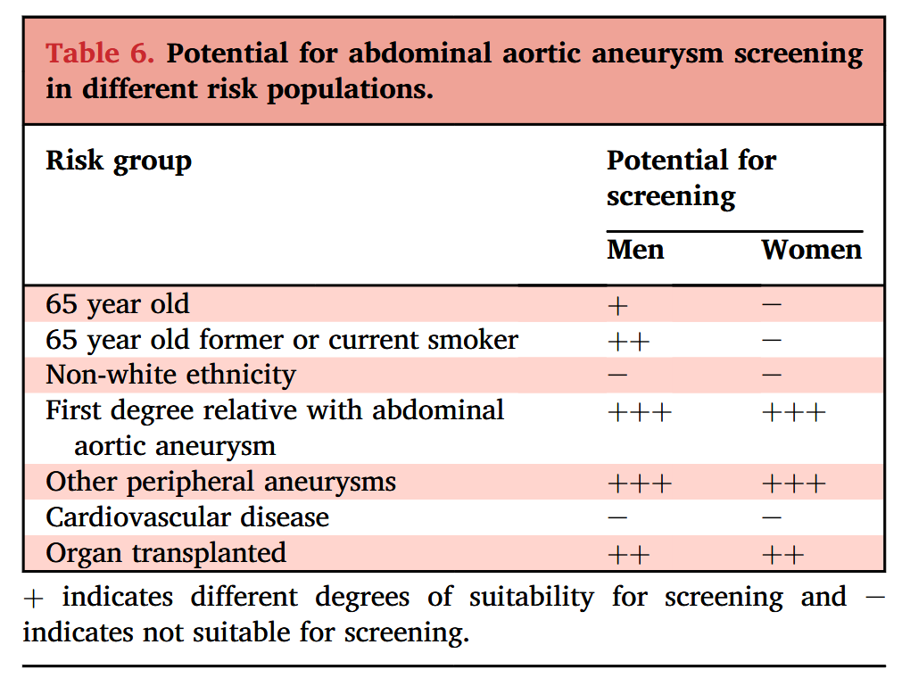

Clase IIa y IIb (amarillo y naranja)
Clase III (rojo)
Guía ESVS 2024: Manejo de Aneurismas Aorto-Ilíacos
Guía ESVS 2024: Manejo Aneurismas Aorto-Ilíacos
La guía de 2024 ha sido revisada en su totalidad, reflejando el rápido desarrollo técnico y médico en el campo. De las 160 recomendaciones, 59 son completamente nuevas (incluyendo siete de Clase I) y 49 han sido recalificadas o reformuladas significativamente, lo que subraya la necesidad de una actualización. El documento se basa en evidencia científica complementada con la opinión de expertos, y las recomendaciones se gradúan según un sistema modificado de la Sociedad Europea de Cardiología (ESC). Sin embargo, solo 10 de las 160 (6%) recomendaciones se basan en evidencia de Nivel A, y hasta 112 (70%) se limitan a evidencia de Nivel C, lo que ilustra el estado generalmente débil de la evidencia en el campo aórtico.
Los potenciales usuarios de estas guías incluyen cualquier médico involucrado en el manejo de pacientes con aneurismas de la aorta abdominal y arterias ilíacas, como cirujanos vasculares, angiólogos, médicos de atención primaria, cardiólogos, cirujanos cardiovasculares, radiólogos intervencionistas y otros profesionales de la salud, así como responsables de políticas de salud e industria. Además, las guías pretenden servir como una fuente importante de información imparcial para el paciente y sus familiares para optimizar la toma de decisiones compartida.
Novedades y Cambios Clave Respecto a la Guía de 2019
Cada sección de la guía ha sido revisada o reescrita, beneficiándose de 474 nuevas referencias publicadas entre 2019 y 2023. Los cambios más notables incluyen:
- Estándares de Calidad: Se ha definido un nuevo conjunto de resultados básicos (Core Outcome Set) para la reparación electiva del aneurisma de aorta abdominal (AAA) y se ha elevado el volumen de casos anual mínimo recomendado por centro a al menos 30 reparaciones de AAA estándar (no menos de 15 abiertas y 15 endovasculares). También se establece un mínimo de 20 reparaciones anuales para AAA complejos. Se destaca la importancia de la formación basada en simulación.
- Diagnóstico y Cribado: Se reafirma el ultrasonido (US) como modalidad primaria, aunque no se recomienda un método de medición sobre otro. Las recomendaciones de cribado se han reevaluado debido a la drástica disminución de la prevalencia del AAA; se mantiene una recomendación fuerte para los grupos de alto riesgo, pero sin definirlos explícitamente, adaptándose a las condiciones locales.
- Manejo de AAA Pequeños: Se especifican intervalos de vigilancia diferenciados por sexo. Se emite una nueva recomendación para suspender la vigilancia cuando sea fútil. Importante, no se considera justificado restringir el uso de antibióticos fluoroquinolonas ni la actividad física/sexual en pacientes con AAA.
- Indicaciones de Reparación: Se establece una recomendación negativa clara para la reparación de AAA <55 mm en hombres y <50 mm en mujeres. Los umbrales para considerar la reparación (55 mm para hombres, 50 mm para mujeres) se mantienen, pero con un grado de recomendación menor (degradado) debido a la falta de evidencia de alta calidad. Se aclara que el umbral de diámetro para considerar la reparación debe basarse preferentemente en la medición por ultrasonido.
- Técnicas de Reparación: Se mantiene el impulso hacia la reparación endovascular (EVAR) como modalidad preferida para la mayoría de los pacientes. Se desaconseja el uso de dispositivos EVAR fuera de las instrucciones de uso (IFU) del fabricante en el entorno electivo y se exige un seguimiento de 10 años en registros para los nuevos dispositivos. El refuerzo profiláctico con malla en laparotomías de línea media ha sido mejorado a una recomendación Clase IIa Nivel A.
- AAA Roto (AAAr): Se ha rebajado la recomendación sobre el uso del balón de oclusión aórtico y se ha mejorado la recomendación para el cierre abdominal asistido por vacío con tracción por malla.
- Seguimiento y Complicaciones: El capítulo sobre seguimiento ha sido actualizado exhaustivamente, con nuevas recomendaciones sobre el manejo de infecciones de injerto y endofugas, incluyendo algoritmos de seguimiento y diagnóstico.
- AAA Complejos: El capítulo se ha expandido significativamente para cubrir aneurismas yuxta/pararrenales y suprarrenales, así como TAAA tipo IV, considerando el EVAR con endoprótesis fenestradas y ramificadas (f/bEVAR) como una opción beneficiosa en pacientes de alto riesgo quirúrgico.
- Aneurismas de Arteria Ilíaca: El umbral de diámetro para la reparación se ha elevado de 35 mm a 40 mm.
- AAA Inflamatorios: Se ha establecido cómo se debe evaluar el edema de la pared al medir el diámetro, lo que tendrá un gran impacto en la indicación de reparación.
- Síndrome de Ehlers-Danlos vascular: Se recomienda el tratamiento preventivo con celiprolol.
- Toma de Decisiones Compartida (SDM): Se ha añadido un nuevo capítulo completo que discute la evidencia para la SDM en el contexto del AAA y proporciona recomendaciones específicas para su aplicación.
Incidencia, Prevalencia y Factores de Riesgo
La prevalencia e incidencia de los AAA han disminuido en los últimos 20 años, atribuido principalmente a la reducción del tabaquismo y a una mejor gestión del riesgo cardiovascular.
- Prevalencia: La prevalencia es insignificante antes de los 55-60 años, pero aumenta con la edad. En programas de cribado europeos, la prevalencia en hombres de 65 años ha caído de ~1.3-1.7% a menos del 1%. La prevalencia en mujeres mayores de 60 años es hasta cuatro veces menor que en hombres (~0.7%).
- Factores de Riesgo: El tabaquismo es el factor de riesgo más potente, con un odds ratio (OR) de >3. Otros incluyen la aterosclerosis, hipertensión, etnia blanca y antecedentes familiares, con una heredabilidad que puede alcanzar el 70%. La diabetes tipo 2 parece tener un efecto protector.
- Historia Natural: La historia natural de un AAA pequeño es el crecimiento progresivo, con un riesgo de ruptura que aumenta con el diámetro del aneurisma.
Recomendaciones (1-160)
A continuación se presentan las 160 recomendaciones de la guía ESVS 2024, incluyendo su Clase y Nivel de Evidencia. Puede ordenar las recomendaciones por su número de orden o por la fuerza de la recomendación (Clase).
2. Estándares de Servicio
Estándares de Servicio para el Tratamiento del AAA
Este apartado establece las recomendaciones generales sobre control de calidad, disponibilidad de recursos, volumen de los centros, formación y los plazos aplicables al manejo contemporáneo del aneurisma de aorta abdominal (AAA). Cuando un centro no puede cumplir con estos requisitos, los pacientes deben ser transferidos a un centro apropiado, respetando siempre su preferencia.
2.1 Control de Calidad
2.1.1 Registros de Calidad en Cirugía Vascular
El control de calidad continuo es un pilar fundamental en la cirugía aórtica. Los registros de calidad permiten una evaluación constante de la actividad y los resultados de la reparación de aneurismas. Son cruciales para evaluar cambios en la práctica, como la introducción de nuevas técnicas, y complementan los ensayos clínicos al monitorizar la generalización de nuevas estrategias de tratamiento. Por ello, se recomienda que los centros que realizan cirugía aórtica introduzcan sus casos en un registro prospectivo validado (Recomendación 1 I C).
2.1.2 Medidas de Resultados Reportados por el Paciente (PROM)
La perspectiva del paciente es invaluable. Las medidas de resultados reportados por el paciente (PROM), junto con las medidas clínicas, permiten una evaluación detallada de nuevas técnicas y el desarrollo de vías de tratamiento personalizadas. Aunque existen varias herramientas (como SF-36 o AneurysmDQoL), se necesita una mayor evaluación y refinamiento para su implementación en los registros vasculares.
2.1.3 Conjuntos de Resultados Clave (COS)
Para estandarizar la evaluación y permitir comparaciones significativas entre estudios y centros, se ha introducido el concepto de Conjuntos de Resultados Clave (Core Outcome Sets - COS). Estos definen un conjunto mínimo de resultados que todos los implicados, incluidos los pacientes, consideran fundamentales. Para la reparación electiva de AAA, se ha definido un COS que incluye seis resultados principales: muerte postoperatoria a 30 días, rotura secundaria del aneurisma, calidad de vida general, retención de la función cognitiva, supervivencia a largo plazo (cinco años) y, solo para EVAR, la expansión continua del saco aneurismático.
2.2 Recursos y Disponibilidad
En las últimas décadas, ha habido un cambio de paradigma desde la reparación quirúrgica abierta (RQA) hacia la reparación endovascular (EVAR) como estrategia predominante. Sin embargo, la cirugía abierta sigue siendo una herramienta crucial para pacientes con anatomía no apta para EVAR o para manejar complicaciones. Ambas técnicas son complementarias, por lo que es fundamental que los centros que tratan AAA tengan los recursos y la experiencia para ofrecer ambas modalidades de forma continua, 24 horas al día, 7 días a la semana (Recomendación 2 I C).
2.3 Volumen Quirúrgico
Existe una sólida y demostrada relación entre un mayor volumen quirúrgico (caseload) y mejores resultados perioperatorios, tanto para reparaciones electivas como de emergencia. Los centros de alto volumen presentan consistentemente tasas de mortalidad y complicaciones más bajas, y una mayor capacidad de "rescate" de pacientes con complicaciones. Por ello, es justificable establecer un volumen quirúrgico mínimo para los centros aórticos.
- Se recomienda que los centros que realizan reparaciones de AAA no tengan un volumen anual total inferior a 30 casos, con un mínimo de 15 reparaciones abiertas y 15 endovasculares cada una (Recomendación 3 III B).
- Para los AAA complejos, debido a su mayor dificultad, se recomienda que solo se realicen en centros con un volumen anual combinado (abierto y endovascular) de al menos 20 reparaciones complejas (Recomendación 4 III C).
Estos umbrales se aplican a la mayoría de los centros, aunque factores geográficos y epidemiológicos pueden requerir adaptaciones locales.
2.4 Formación en Cirugía Aórtica
El descenso en el número de cirugías abiertas ha creado un desafío para la formación de los nuevos cirujanos. La exposición de los residentes a la RQA ha disminuido drásticamente, lo que hace que la formación basada en simulación sea cada vez más importante para adquirir y mantener las habilidades necesarias tanto para la RQA como para la EVAR. Se ha demostrado que la simulación mejora el rendimiento y reduce los errores. Por lo tanto, el currículo de formación en cirugía vascular debe incluir entrenamiento basado en simulación en la reparación aórtica, tanto abierta como endovascular (Recomendación 5 I B). Puede ser necesario que los residentes roten por centros de mayor volumen para ganar experiencia.
2.5 Vía de Tratamiento
Una vez que se alcanza la indicación de reparación electiva, es crucial garantizar una vía de atención segura y oportuna. El tiempo de espera debe tener en cuenta el riesgo de rotura, que aumenta con el tamaño del aneurisma. Basándose en el riesgo de rotura durante la espera, se considera razonable un límite máximo de ocho semanas desde la derivación hasta el tratamiento para un AAA infrarrenal estándar (Recomendación 6 I C). Para aneurismas más grandes (>70 mm), se debe buscar un plazo más corto, mientras que para casos complejos o pacientes con comorbilidades, un tiempo de planificación más largo puede estar justificado.
Se recomienda que los centros que realizan cirugía aórtica introduzcan los casos en un registro prospectivo validado para permitir el seguimiento de la práctica y los resultados.
Los centros o redes de centros colaboradores que tratan a pacientes con aneurismas de aorta abdominal deben ser capaces de ofrecer tanto cirugía aórtica endovascular como abierta.
Los centros que realizan reparaciones de aneurismas de aorta abdominal no deben tener un volumen de casos anual total <30, y no menos de 15 de cada uno por métodos abiertos y endovasculares.
Los centros que tratan aneurismas de aorta abdominal complejos no deben tener un volumen de casos anual combinado de reparación aórtica abierta y endovascular fenestrada y ramificada <20.
El plan de estudios de formación en cirugía vascular debe incluir formación basada en simulación en la reparación aórtica abierta y endovascular.
Los pacientes con un aneurisma de aorta abdominal asintomático que han alcanzado el umbral de tamaño en el que se considera la reparación deben recibir una vía rápida* para la atención quirúrgica vascular.
* Una vía de ocho semanas es un límite superior razonable desde la derivación hasta el tratamiento electivo de un AAA infrarrenal, mientras que se debe considerar un plazo más corto para AAA más grandes (>70 mm) y se puede justificar un tiempo de planificación o preparación más largo para aneurismas más complejos o pacientes comórbidos.
3. Epidemiología, Diagnóstico y Cribado
Epidemiología, Diagnóstico y Cribado del Aneurisma de Aorta Abdominal
3.1 Epidemiología
Un aneurisma de aorta abdominal (AAA) se define como una dilatación focal permanente de la arteria a más del 50% de su diámetro normal o, en la práctica clínica, a un diámetro fijo de 30 mm o más. La prevalencia e incidencia de los AAA han disminuido notablemente en los últimos 20 años, un cambio atribuido principalmente a la reducción del tabaquismo y a un mejor control de los factores de riesgo cardiovascular.
Los programas de cribado poblacional ofrecen la mejor evidencia sobre la prevalencia actual. En hombres de 65 años, la prevalencia ha caído por debajo del 1% en países como Suecia y el Reino Unido, una disminución drástica desde tasas anteriores del 4-7%. En mujeres, la prevalencia es hasta cuatro veces menor. El tabaquismo sigue siendo el factor de riesgo más potente, seguido de la aterosclerosis, la hipertensión y los antecedentes familiares, con una heredabilidad estimada de hasta el 70%. Curiosamente, la diabetes parece tener un efecto protector.
3.2 Diagnóstico
Los AAA intactos suelen ser clínicamente silenciosos y la palpación abdominal no es un método fiable para su diagnóstico. Las herramientas de imagen son esenciales.
3.2.1 Ecografía
La ecografía abdominal es la herramienta de primera línea para la detección y vigilancia de los AAA pequeños, con una sensibilidad y especificidad superiores al 97% (Recomendación 7 I B). La medición más reproducible es el diámetro anteroposterior (AP), que debe realizarse en un plano perpendicular al eje longitudinal de la aorta.
Un aspecto crítico es la colocación de los cálipers, existiendo tres métodos principales: de pared externa a externa (OTO), de borde anterior a borde anterior (LELE) e de pared interna a interna (ITI). No hay un consenso sobre cuál es superior, pero la diferencia en el diámetro medido es clínicamente significativa: las mediciones ITI son entre 3 y 6 mm más pequeñas que las OTO. Esto tiene un gran impacto en el diagnóstico (el método OTO es más sensible y detecta más casos) y en el momento de alcanzar el umbral de reparación (se alcanza antes con OTO). Debido a estas implicaciones, es fundamental que cada programa clínico utilice un método de forma consistente (Recomendación 8 IIa B).
3.2.2 Angiografía por Tomografía Computarizada (Angio-TC)
La Angio-TC es el método clave para la planificación del tratamiento una vez que se alcanza el umbral de reparación en la ecografía, y es la modalidad de elección para el diagnóstico de rotura (Recomendación 9 I C). Permite un análisis tridimensional detallado de toda la aorta y los vasos de acceso, lo cual es indispensable para la planificación de la reparación endovascular (EVAR). Se recomienda el uso de software de post-procesamiento dedicado para realizar mediciones precisas en un plano ortogonal al eje de la aorta (Recomendación 10 I C).
Es importante destacar que a menudo existe una discrepancia entre las mediciones de la ecografía y la Angio-TC, siendo estas últimas generalmente mayores. Esto puede llevar a que un aneurisma considerado sub-quirúrgico por ecografía supere el umbral de reparación en la Angio-TC. Por ello, la decisión de realizar la Angio-TC se basa en el diámetro medido por ecografía.
3.3 Cribado (Screening) del AAA
Cuatro grandes ensayos clínicos aleatorizados en hombres demostraron que el cribado poblacional reduce significativamente la mortalidad específica por AAA. Aunque estos ensayos son antiguos y la epidemiología ha cambiado, la evidencia sigue siendo sólida. El principal beneficio es la detección y reparación electiva de aneurismas antes de que se rompan, lo que, a pesar de aumentar el número de cirugías electivas, es coste-efectivo.
Debido a la disminución de la prevalencia, la recomendación de cribado se ha actualizado. En lugar de recomendar el cribado para todos los hombres de 65 años, ahora se recomienda para poblaciones de alto riesgo. La definición de "alto riesgo" debe adaptarse a las condiciones locales de cada país, como la prevalencia de la enfermedad y la estructura sanitaria (Recomendación 11 I A).
Los grupos de mayor riesgo incluyen hombres mayores (≥65 años), especialmente fumadores o exfumadores, y personas (hombres y mujeres) con familiares de primer grado con un AAA. También se considera el cribado en pacientes con otros aneurismas periféricos o en receptores de trasplantes de órganos sólidos.
Actualmente, no hay evidencia suficiente para recomendar el cribado poblacional en mujeres o en etnias no caucásicas, donde la prevalencia es considerablemente menor.
3.4 Detección Incidental
Con el uso generalizado de técnicas de imagen (TC, RM, ecografía) para otras patologías, muchos AAA se detectan de forma incidental. Es una observación preocupante que, en ocasiones, estos hallazgos son ignorados y los pacientes no son derivados para una evaluación adecuada. Por lo tanto, se recomienda que cualquier paciente con un AAA detectado incidentalmente sea derivado a un cirujano vascular para su evaluación, a menos que tenga una esperanza de vida muy limitada (Recomendación 12 I C).
Se recomienda la ecografía para el diagnóstico de primera línea y la vigilancia de los aneurismas de aorta abdominal pequeños.
Se debe considerar el plano anteroposterior con una colocación consistente del calibre como el método preferido para la medición del diámetro aórtico abdominal por ecografía.
Se recomienda la angiografía por tomografía computarizada para la planificación del tratamiento una vez que se ha alcanzado el umbral de diámetro anteroposterior para la reparación electiva del aneurisma de aorta abdominal en la ecografía, y para el diagnóstico de la rotura.
Se recomienda la medición del diámetro aórtico con angiografía por tomografía computarizada utilizando un software de análisis de posprocesamiento dedicado; con una colocación consistente del calibre en un plano ortogonal perpendicular a la aorta.
Se recomienda el cribado por ecografía para la detección precoz del aneurisma de aorta abdominal en poblaciones de alto riesgo* para reducir la muerte por rotura del aneurisma.
* Lo que puede considerarse un grupo de alto riesgo varía según las condiciones locales, como la prevalencia de la enfermedad, la esperanza de vida y la estructura sanitaria, ver Tabla 6.

Los pacientes con un aneurisma de aorta abdominal detectado incidentalmente deben ser derivados a un cirujano vascular para su evaluación, excepto en los casos con una esperanza de vida muy limitada.
4. Manejo de Pacientes con un Aneurisma de Aorta Abdominal Pequeño
Se debe considerar en los hombres la vigilancia por imagen mediante ecografía, cada cinco años para una aorta subaneurismática de 25-29 mm de diámetro, cada tres años para aneurismas de aorta abdominal de 30-39 mm de diámetro, anualmente para aneurismas de 40-49 mm, y cada seis meses para aneurismas ≥50 mm, teniendo en cuenta la esperanza de vida, la idoneidad para una futura reparación y las preferencias del paciente.

Se debe considerar en las mujeres la vigilancia por imagen mediante ecografía, cada cinco años para una aorta subaneurismática de 25-29 mm de diámetro, cada tres años para aneurismas de 30-39 mm de diámetro, anualmente para aneurismas de 40-44 mm, y cada seis meses para aneurismas ≥45 mm, teniendo en cuenta la esperanza de vida, la idoneidad para una futura reparación y las preferencias del paciente.

En pacientes con aneurismas de aorta abdominal pequeños que no se espera que alcancen el umbral de diámetro para la reparación dentro de su esperanza de vida, o que no son aptos para la reparación, o que prefieren un manejo conservador, se debe considerar la interrupción de la vigilancia.
Todos los pacientes con un aneurisma de aorta abdominal deben recibir un manejo de los factores de riesgo cardiovascular con cese del tabaquismo*, control de la presión arterial*, terapia con estatinas y antiplaquetarios*, y consejos sobre el estilo de vida (incluyendo ejercicio y una dieta saludable).
* Para detalles sobre terapia de reemplazo de nicotina, elección específica de medicamentos, dosis y valores objetivo para el tratamiento médico, se remite a las últimas guías dedicadas a la reducción del riesgo cardiovascular.
 Pequeño.png)
Se recomienda a los pacientes con un aneurisma de aorta abdominal pequeño que dejen de fumar y deben recibir ayuda para ello, para reducir la tasa de crecimiento del aneurisma de aorta abdominal y el riesgo de rotura.
Tener un aneurisma de aorta abdominal pequeño no es una contraindicación para el uso de antibióticos de fluoroquinolonas.
No está indicado restringir el ejercicio o la actividad sexual en pacientes con aneurismas de aorta abdominal pequeños*.
* Aquí definido como <70 mm de diámetro.

No se recomienda la reparación electiva en hombres con un aneurisma de aorta abdominal asintomático <55 mm.
No se recomienda la reparación electiva en mujeres con un aneurisma de aorta abdominal asintomático <50 mm.
Se debe considerar la reparación electiva en hombres con un aneurisma de aorta abdominal ≥55 mm.
Se puede considerar la reparación electiva en mujeres con un aneurisma de aorta abdominal ≥50 mm.
En pacientes con aneurismas de aorta abdominal pequeños que muestran un crecimiento rápido (≥10 mm/año) se debe considerar una nueva medición del diámetro del aneurisma como primera medida.
En pacientes con un aneurisma de aorta abdominal que han alcanzado el umbral de diámetro para la reparación, pero que inicialmente se consideran no aptos para la reparación, se debe considerar la vigilancia continua, la derivación a otros especialistas para la optimización de su estado físico y luego una reevaluación.
5. Reparación Electiva del Aneurisma de Aorta Abdominal
Reparación Electiva del Aneurisma de Aorta Abdominal (AAA)
Este capítulo se enfoca en el tratamiento de aneurismas infrarrenales no rotos que son aptos para reparación electiva mediante técnicas abiertas estándar o con endoprótesis comerciales disponibles.
5.1 Manejo Preoperatorio
5.1.1 Evaluación de la Anatomía Vascular
La obtención de imágenes aórticas dedicadas es crucial para determinar la estrategia de reparación. Se aboga por el cribado de toda la aorta y el segmento femoropoplíteo, ya que la presencia de aneurismas sincrónicos puede influir en la decisión quirúrgica. Para la reparación endovascular (EVAR), es fundamental una planificación detallada con angiografía por tomografía computarizada (ATC) y software de postprocesamiento dedicado para evaluar la morfología aórtica y seleccionar el dispositivo adecuado.
- Recomendación 26
- Recomendación 27
5.1.2 Evaluación y Optimización del Riesgo Operatorio
La reparación endovascular (EVAR) tiene una mortalidad operatoria menor que la reparación quirúrgica abierta (RQA). Como mínimo, todos los pacientes deben someterse a una evaluación clínica, funcional, análisis de sangre, función renal y un electrocardiograma. El ejercicio supervisado preoperatorio puede ser beneficioso y el cese del tabaquismo reduce las complicaciones.
Evaluación y Manejo del Riesgo Cardíaco
Las complicaciones cardíacas son una causa principal de muerte perioperatoria. Se deben evaluar los factores de riesgo clínico y la capacidad funcional (MET) del paciente. La revascularización coronaria profiláctica no se recomienda en pacientes con enfermedad coronaria estable. En pacientes que requieren doble terapia antiplaquetaria tras una intervención coronaria, se debe considerar retrasar la reparación del AAA. Además, la insuficiencia cardíaca y la estenosis aórtica severa deben ser tratadas y optimizadas antes de la cirugía.
- Recomendación 28
- Recomendación 29
- Recomendación 30
.png)
Evaluación y Manejo del Riesgo Pulmonar
Las pruebas rutinarias de función pulmonar o las radiografías de tórax no están indicadas, pero los pacientes con sospecha de función respiratoria comprometida deben ser evaluados y optimizados antes de la reparación.
- Recomendación 31
- Recomendación 32
Evaluación y Optimización de la Función Renal
La disfunción renal preexistente es un predictor clave de morbilidad y mortalidad. Se debe medir la creatinina sérica para estimar la tasa de filtración glomerular (TFG). La insuficiencia renal grave (TFG < 30 ml/min/1,73 m²) requiere una evaluación por un nefrólogo. Una hidratación adecuada es fundamental, especialmente si se utilizará contraste.
- Recomendación 33
- Recomendación 34
Evaluación y Optimización del Estado Nutricional
El estado nutricional influye en los resultados. La hipoalbuminemia severa (albúmina < 2.8 g/dL) se asocia con peores resultados, por lo que las deficiencias nutricionales deben corregirse antes de la cirugía electiva.
- Recomendación 35
Evaluación de la Arteria Carótida
El cribado rutinario de estenosis carotídea asintomática no está indicado. Sin embargo, para pacientes con una estenosis carotídea sintomática reciente (50-99%), se recomienda la intervención carotídea antes de la reparación del AAA.
- Recomendación 36
- Recomendación 37
Evaluación de la Fragilidad y Sarcopenia
La fragilidad y la sarcopenia (pérdida de masa muscular) se asocian con un aumento de la mortalidad, pero su valor añadido a las evaluaciones de riesgo estándar aún no está confirmado.
5.2 Manejo Perioperatorio
5.2.1 Mejor Tratamiento Médico Perioperatorio
El tratamiento perioperatorio incluye la continuación de estatinas y monoterapia antiplaquetaria. No se recomienda iniciar betabloqueantes justo antes de la cirugía. Se debe evitar la doble terapia antiplaquetaria o los anticoagulantes orales durante el período perioperatorio si es posible.
- Recomendación 38
- Recomendación 39
- Recomendación 40
- Recomendación 41
5.2.2 Profilaxis Antibiótica
Se debe administrar profilaxis antibiótica sistémica antes de cualquier reparación de AAA, ya sea abierta o endovascular.
- Recomendación 42
5.2.3 Anestesia y Manejo del Dolor Postoperatorio
Se debe instituir una terapia de dolor multimodal. Para la RQA, se puede considerar la analgesia epidural. Para la EVAR, la anestesia locorregional puede ser preferible a la general.
- Recomendación 43
- Recomendación 44
5.2.4 Imagen Intraoperatoria
En la EVAR estándar, la angiografía por sustracción digital (ASD) suele ser suficiente. Otras modalidades como la fusión de imágenes o la tomografía computarizada de haz cónico se utilizan principalmente en reparaciones complejas.
5.2.5 Medidas de Radioprotección
Es fundamental cumplir con el principio ALARA (As Low As Reasonably Achievable) para minimizar la exposición a la radiación del paciente y del personal. Se recomienda el uso de sistemas de imagen fijos modernos en quirófanos híbridos.
5.2.6 Recuperación Celular
El uso de recuperación de sangre intraoperatoria (cell salvage) puede reducir la necesidad de transfusiones de sangre alogénica durante la RQA.
- Recomendación 45
5.2.7 Administración Intraoperatoria de Heparina
Se aconseja la administración de heparina (50–100 UI/kg) antes del clampaje aórtico o al inicio de la EVAR para minimizar el riesgo de trombosis. El tiempo de coagulación activado (TCA) puede utilizarse para guiar la dosificación.
- Recomendación 46
- Recomendación 47
5.2.8 Profilaxis de la Trombosis Venosa
Se debe evaluar el riesgo de tromboembolismo venoso (TEV) en todos los pacientes y considerar la tromboprofilaxis en aquellos con riesgo elevado.
- Recomendación 48
5.3 Técnicas para la Reparación Electiva del AAA
5.3.1 Reparación Abierta (RQA)
Se utilizan injertos textiles (Dacron) o de ePTFE. La anastomosis proximal debe realizarse lo más cerca posible de las arterias renales y se debe preservar el flujo a al menos una arteria ilíaca interna. La reimplantación de la arteria mesentérica inferior es selectiva. El uso profiláctico de mallas para reforzar el cierre de la línea media puede reducir la incidencia de hernias incisionales.
- Recomendación 49
- Recomendación 50
- Recomendación 51
- Recomendación 52
- Recomendación 53
- Recomendación 54
- Recomendación 55
5.3.2 Reparación Endovascular (EVAR)
La EVAR excluye el saco aneurismático mediante una endoprótesis. La selección del dispositivo depende de la anatomía y los datos de durabilidad. No se recomienda el uso fuera de las instrucciones de uso (IFU) del fabricante en el entorno electivo. Las nuevas generaciones de dispositivos, como los de bajo perfil, requieren una evaluación cuidadosa a largo plazo debido a informes de complicaciones. Los nuevos conceptos, como el sellado de aneurismas (EVAS), han mostrado tasas de fracaso inaceptables, destacando la necesidad de una evaluación rigurosa de las nuevas tecnologías. El acceso femoral puede ser percutáneo o mediante disección quirúrgica. Las arterias renales accesorias pequeñas pueden cubrirse, pero las grandes deben preservarse. No está indicada la embolización profiláctica rutinaria de ramas colaterales.
- Recomendación 56
- Recomendación 57
- Recomendación 58
- Recomendación 59
- Recomendación 60
- Recomendación 61
- Recomendación 62
- Recomendación 63
- Recomendación 64
5.3.3 Reparación Quirúrgica Abierta vs. Reparación Aórtica Endovascular
Los ensayos aleatorizados muestran un beneficio de supervivencia temprano para la EVAR que se pierde a medio plazo, con mayores tasas de reintervención. Sin embargo, los datos contemporáneos de registros indican una mejora continua en los resultados de la EVAR. La elección de la técnica debe ser individualizada. En la mayoría de los pacientes con anatomía adecuada, la EVAR se considera la modalidad de tratamiento preferida. Para pacientes jóvenes y en buena forma con una larga esperanza de vida, la RQA debe considerarse como la opción preferida. La reparación no está recomendada en pacientes con una esperanza de vida limitada.
- Recomendación 65
- Recomendación 66
- Recomendación 67
5.3.4 Reparación Aórtica Laparoscópica
Es una técnica técnicamente exigente que se ha asociado con un mayor riesgo de muerte y eventos adversos en comparación con la RQA.
- Recomendación 68
5.4 Complicaciones Perioperatorias tras la Reparación Electiva del AAA
Las complicaciones mayores son más frecuentes tras la RQA. El "fracaso en el rescate" (retraso en el reconocimiento y manejo de complicaciones) es el principal determinante de la mortalidad. Los hospitales con mayor volumen de cirugías presentan mejores resultados. Los pacientes sometidos a RQA y los de alto riesgo en EVAR deben ser monitorizados en una unidad de cuidados intensivos o de alta dependencia.
- Recomendación 69
| Aplicabilidad Morfológica | Rango | Dispositivos disponibles en España |
|---|---|---|
| Diámetro mínimo del cuello proximal | 16–19 mm | Gore Excluder C3 Medtronic Endurant II/IIs Cook Zenith Flex/Alpha Terumo Aorfix Bolton Treovance |
| Diámetro máximo del cuello proximal | 28–32 mm | Gore Excluder C3 Medtronic Endurant II/IIs Cook Zenith Flex/Alpha Terumo Aorfix Bolton Treovance |
| Longitud mínima del cuello proximal | 10–15 mm (varía según el ángulo) |
Gore Excluder C3/EXCC (≥10mm) Medtronic Endurant II (≥10mm) Cook Zenith (≥15mm) Terumo Aorfix (≥15mm) |
| Ángulo máximo β (infrarrenal) | 45–90° (varía según longitud del cuello) |
Gore Excluder C3 (≤60°) Medtronic Endurant II (≤60°) Cook Zenith (≤60°) Terumo Aorfix (≤90°) Bolton Treovance (≤90°) |
| Ángulo máximo α (suprarrenal) | 45–60° (algunas endoprótesis no aplica) |
Gore Excluder C3 Medtronic Endurant II Cook Zenith (con anclaje suprarrenal) Terumo Aorfix |
| Zona máxima de calcificación/trombo del cuello proximal | 50% | Todos los dispositivos (limitación general del 50%) |
| Diámetro mínimo de la bifurcación aórtica | 12–21 mm | Gore Excluder C3 Medtronic Endurant II Cook Zenith Terumo Aorfix Bolton Treovance |
| Diámetro mínimo de la arteria ilíaca común | 7–11 mm | Gore Excluder C3 Medtronic Endurant II Cook Zenith Terumo Aorfix Bolton Treovance |
| Diámetro máximo de la arteria ilíaca común | 18–25 mm | Gore Excluder C3 Medtronic Endurant II Cook Zenith Terumo Aorfix Bolton Treovance |
| Longitud mínima de zona de anclaje distal ilíaca común | 10–20 mm | Todos los dispositivos (requerimiento estándar 10-20mm) |
| Diámetro mínimo de acceso ipsilateral | 5–8.5 mm (varía por diámetro del cuello proximal) |
Gore Excluder C3 (12-16F) Medtronic Endurant II (14-18F) Cook Zenith (18-20F) Terumo Aorfix (16-18F) |
| Diámetro mínimo de acceso contralateral | 3.5–7 mm (varía según diámetro ilíaca común) |
Gore Excluder C3 (12F) Medtronic Endurant II (14F) Cook Zenith (14F) Terumo Aorfix (16F) |
|
Leyenda: β: ángulo infrarrenal, α: ángulo suprarrenal. Comentario: Los valores representan rangos recomendados en las IFU de los dispositivos para realizar EVAR. La selección anatómica rigurosa mejora resultados y disminuye complicaciones como migración, endoleaks y fracaso del sellado. Los rangos pueden variar con nuevos dispositivos y avances tecnológicos según guías ESVS 2024 y estudios actuales[8][10][40][48]. Los dispositivos mostrados están comercializados en España y cumplen con los criterios específicos de cada parámetro anatómico. |
||
Antes de la reparación del aneurisma de aorta abdominal, se debe considerar la obtención de imágenes de cribado de toda la aorta, las arterias de acceso y femoropoplíteas.
Antes de la reparación endovascular del aneurisma de aorta abdominal, se debe considerar una planificación detallada del procedimiento preoperatorio con angiografía por tomografía computarizada, incluyendo el uso de un software de análisis de posprocesamiento dedicado.
No está indicada la derivación rutinaria para una evaluación cardíaca preoperatoria, angiografía coronaria, prueba de ejercicio cardiopulmonar y revascularización coronaria rutinaria en pacientes con enfermedad coronaria estable, antes de la reparación del aneurisma de aorta abdominal.
Se recomienda derivar a los pacientes con baja capacidad funcional (definida como equivalentes metabólicos <4) o con factores de riesgo clínico significativos (angina inestable, insuficiencia cardíaca descompensada, enfermedad valvular grave y arritmias significativas) para una evaluación y optimización cardíaca antes de la reparación electiva del aneurisma de aorta abdominal.
En pacientes con doble terapia antiplaquetaria después de una intervención coronaria percutánea, se puede considerar el retraso de la reparación del aneurisma de aorta abdominal hasta después de la reducción a monoterapia. Por el contrario, se puede considerar la realización de una reparación aórtica endovascular bajo doble terapia antiplaquetaria si la reparación no puede posponerse.
No están indicadas las pruebas de función pulmonar rutinarias con espirometría o radiografía de tórax antes de la reparación electiva del aneurisma de aorta abdominal.
Los pacientes con factores de riesgo de complicaciones pulmonares o un deterioro reciente de la función respiratoria deben ser derivados para una evaluación y optimización respiratoria antes de la reparación electiva del aneurisma de aorta abdominal.
Se recomienda la evaluación de la función renal preoperatoria midiendo la creatinina sérica y estimando la tasa de filtración glomerular antes de la reparación electiva del aneurisma de aorta abdominal, con derivación a un nefrólogo en caso de insuficiencia renal grave (tasa de filtración glomerular estimada <30 mL/min/1.73 m2).
Los pacientes con insuficiencia renal deben ser adecuadamente hidratados antes de la reparación electiva del aneurisma de aorta abdominal.
Se debe considerar la evaluación del estado nutricional preoperatorio midiendo la albúmina sérica antes de la reparación electiva del aneurisma de aorta abdominal, con un nivel de albúmina <2.8 g/dL como umbral para la corrección preoperatoria.
No están indicados el cribado rutinario de la estenosis carotídea asintomática ni la intervención carotídea profiláctica rutinaria para la estenosis carotídea asintomática antes de la reparación del aneurisma de aorta abdominal.
Para pacientes con aneurismas de aorta abdominal y estenosis carotídea concomitante sintomática (en los últimos seis meses) del 50-99%, se recomienda la intervención carotídea antes de la reparación electiva del aneurisma de aorta abdominal.
No se recomienda el inicio de betabloqueantes antes de la reparación del aneurisma de aorta abdominal.
Los pacientes sometidos a reparación electiva de aneurismas de aorta abdominal deben comenzar el tratamiento con estatinas antes de la operación (idealmente al menos cuatro semanas antes de la cirugía) y continuar indefinidamente después de la operación.
Se debe considerar la continuación de la monoterapia establecida con aspirina o tienopiridinas (p. ej., clopidogrel) durante el período perioperatorio en pacientes sometidos a reparación electiva abierta o endovascular de aneurismas de aorta abdominal.
No se recomienda que los pacientes sometidos a reparación electiva de aneurismas de aorta abdominal estén en terapia dual antiplaquetaria o con anticoagulantes orales durante el período perioperatorio*.
* Ver también Recomendación 30.
Todos los pacientes sometidos a reparación abierta o endovascular de aneurismas de aorta abdominal deben recibir profilaxis antibiótica sistémica perioperatoria.
Se puede considerar en los pacientes sometidos a reparación abierta electiva de aneurismas de aorta abdominal la analgesia epidural perioperatoria o la analgesia continua de la herida basada en catéter, para maximizar el alivio del dolor y minimizar las complicaciones postoperatorias tempranas.
Se puede considerar en los pacientes sometidos a reparación endovascular electiva de aneurismas de aorta abdominal la anestesia locorregional con preferencia a la anestesia general.
Se debe considerar el uso intraoperatorio de la recuperación de células sanguíneas y la retransfusión durante la reparación abierta de aneurismas de aorta abdominal.
En la reparación electiva abierta o endovascular de aneurismas de aorta abdominal se recomienda la administración intraoperatoria de heparina intravenosa (50-100 UI/kg).
Se puede considerar el uso intraoperatorio del tiempo de coagulación activado (ACT) durante la reparación abierta y endovascular de aneurismas de aorta abdominal, para medir el efecto de la heparina en el paciente individual y guiar la administración adicional de heparina.
Todos los pacientes sometidos a reparación electiva de aneurismas de aorta abdominal y considerados en riesgo de tromboembolismo venoso postoperatorio deben ser considerados para la tromboprofilaxis.
Para la reparación abierta de aneurismas de aorta abdominal, no se recomienda el uso rutinario de injertos recubiertos de antimicrobianos para prevenir la infección del injerto aórtico.
Para la reparación abierta de aneurismas de aorta abdominal, la elección de una incisión abdominal media frente a una transversal o transperitoneal frente a una retroperitoneal debe considerarse en función de la preferencia del cirujano y los factores del paciente.
Se puede considerar la reconstrucción de la vena renal izquierda después de su división durante la reparación abierta de aneurismas de aorta abdominal si se han sacrificado colaterales importantes.
Para la reparación abierta de aneurismas de aorta abdominal, se recomienda realizar la anastomosis proximal lo más cerca posible de las arterias renales para prevenir el desarrollo posterior de aneurismas en el segmento aórtico infrarrenal restante.
Para la reparación abierta de aneurismas de aorta abdominal, se recomienda preservar el flujo sanguíneo a al menos una arteria ilíaca interna para reducir el riesgo de claudicación glútea e isquemia colónica.
En la reparación abierta de aneurismas de aorta abdominal, la reimplantación rutinaria de la arteria mesentérica inferior no está indicada, pero debe reservarse para casos seleccionados de sospecha de perfusión insuficiente de los órganos pélvicos y el riesgo de isquemia colónica.
Para la reparación abierta de aneurismas de aorta abdominal, se debe considerar el uso profiláctico de refuerzo con malla en las laparotomías de línea media.
Para la reparación endovascular de aneurismas de aorta abdominal, la selección del dispositivo debe considerarse en función de la anatomía aorto-ilíaca y la disponibilidad de datos de durabilidad a largo plazo no sesgados.
No se recomienda la reparación endovascular de aneurismas de aorta abdominal fuera de las instrucciones de uso del fabricante en el entorno electivo.
Para las nuevas generaciones de endoprótesis para el tratamiento de aneurismas de aorta abdominal basadas en plataformas existentes, como los dispositivos de bajo perfil, se recomienda el seguimiento a largo plazo en registros prospectivos, para garantizar el rendimiento del dispositivo y la durabilidad del procedimiento durante 10 años.
No se recomienda el uso rutinario de nuevas técnicas y conceptos para el tratamiento de aneurismas de aorta abdominal en la práctica clínica, sino que solo deben utilizarse en el marco de estudios aprobados por comités de ética de la investigación, hasta que se evalúen adecuadamente.
Para la reparación endovascular de aneurismas de aorta abdominal, la elección del acceso percutáneo o la exposición quirúrgica debe considerarse en función de los factores del paciente y las preferencias del operador.
Para la reparación endovascular de aneurismas de aorta abdominal mediante un abordaje percutáneo, se recomienda la guía por ecografía.
En pacientes sometidos a reparación endovascular de aneurismas de aorta abdominal, se debe considerar la preservación de las arterias renales accesorias grandes (≥4 mm) o aquellas que irrigan una porción significativa del riñón (>1/3), sin comprometer un sellado adecuado.
En pacientes sometidos a reparación endovascular de aneurismas de aorta abdominal, no está indicada la embolización profiláctica rutinaria de las arterias renales accesorias.
En pacientes sometidos a reparación endovascular de aneurismas de aorta abdominal, no está indicada la embolización profiláctica rutinaria de la arteria mesentérica inferior y las arterias lumbares, ni la embolización no selectiva del saco del aneurisma.
Para la mayoría de los pacientes con anatomía adecuada y una esperanza de vida razonable, la reparación endovascular debe considerarse la modalidad de tratamiento preferida para la reparación electiva de aneurismas de aorta abdominal.
Para la mayoría de los pacientes con una larga esperanza de vida, la reparación quirúrgica abierta debe considerarse la modalidad de tratamiento preferida para la reparación electiva de aneurismas de aorta abdominal.
Para los pacientes con una esperanza de vida limitada, no se recomienda la reparación electiva de aneurismas de aorta abdominal, ni la reparación abierta ni la endovascular.
No se recomienda la reparación laparoscópica de aneurismas de aorta abdominal.
Se recomienda que todos los pacientes con un aneurisma de aorta abdominal sometidos a reparación quirúrgica abierta y los pacientes de alto riesgo sometidos a reparación endovascular tengan una monitorización postoperatoria temprana en una unidad de cuidados intensivos o de alta dependencia.
6. Manejo del Aneurisma de Aorta Abdominal Roto y Sintomático
Manejo del Aneurisma de Aorta Abdominal Roto y Sintomático
Es crucial distinguir entre un aneurisma de aorta abdominal (AAA) sintomático (con dolor o embolias, pero sin rotura) y un AAA roto (AAAr) (hemorragia fuera de la pared aórtica), ya que los resultados del tratamiento varían significativamente.
6.1 Evaluación Preoperatoria
Evaluación Clínica y Radiológica
La tríada clásica de hipotensión, dolor y masa abdominal pulsátil solo se presenta en cerca del 50% de los casos de AAAr. El diagnóstico erróneo es frecuente (32-39%), especialmente en pacientes estables. Aunque la ecografía de emergencia puede identificar un AAA, su sensibilidad para detectar la hemorragia es baja. Por ello, la AngioTC es la modalidad de imagen clave para todos los pacientes con sospecha de AAAr, permitiendo confirmar el diagnóstico y planificar la reparación. La mayoría de los pacientes están lo suficientemente estables para una AngioTC; solo los más inestables requieren traslado directo al quirófano.
- Recomendación 70
Fístula Aortocava (FAC)
Una FAC es una rotura del AAA hacia la vena cava inferior, presente en el 2-6% de los AAAr. En lugar de una hemorragia masiva, causa síntomas de insuficiencia cardíaca y alta presión venosa. Tras la reparación endovascular (EVAR), la fístula puede persistir y requerir un cierre secundario si provoca complicaciones como endofugas o fallo cardíaco.
- Recomendación 71
6.2 Manejo Perioperatorio
Hipotensión Permisiva y Transfusión
Se aconseja una política de hipotensión permisiva, manteniendo una presión arterial sistólica de 70-90 mmHg en un paciente consciente hasta lograr el control aórtico. Esto limita la pérdida de sangre y la coagulopatía. La reanimación debe priorizar el uso de sangre y hemoderivados [7].
- Recomendación 72
Anestesia
Mientras que la reparación abierta (RQA) necesita anestesia general, la EVAR para AAAr puede realizarse con anestesia local. Varios estudios han demostrado que la anestesia local se asocia con una mejor supervivencia en comparación con la general.
- Recomendación 73 ]
Técnicas y Dispositivos
El balón de oclusión aórtica (BOA) puede usarse para el control proximal en pacientes inestables, aunque la evidencia sobre su beneficio en la supervivencia es débil. Para la EVAR, se puede optar por un dispositivo bifurcado o aorto-uni-ilíaco (AUI), considerándose el bifurcado preferible si la anatomía lo permite. Es fundamental un sobredimensionamiento del injerto de hasta el 30% si la AngioTC se realizó bajo hipotensión permisiva.
- Recomendación 74
- Recomendación 75
- Recomendación 76
Anticoagulación y Cuidados Paliativos
Se debe considerar la administración de heparina una vez controlada la hemorragia. La profilaxis de la trombosis venosa profunda (TVP) se debe valorar cuando el riesgo de sangrado disminuya. La decisión de ofrecer cuidados paliativos no debe basarse únicamente en la edad avanzada o en sistemas de puntuación, ya que incluso pacientes de edad muy avanzada pueden tener buenos resultados a largo plazo si sobreviven a la cirugía.
- Recomendación 77
- Recomendación 78
- Recomendación 79
6.3 Reparación Abierta (RQA) vs. Reparación Endovascular (EVAR)
Aunque los ensayos aleatorizados no encontraron una diferencia significativa en la mortalidad a 30 días, la evidencia acumulada de grandes registros y metaanálisis favorece a la EVAR como la opción de primera línea en pacientes con anatomía adecuada. La EVAR se asocia con menor mortalidad perioperatoria, menor morbilidad (menos complicaciones cardíacas, respiratorias, renales e isquémicas), estancias hospitalarias más cortas, mejor calidad de vida a corto plazo y una mejor relación coste-efectividad.
- Recomendación 80
6.4 Complicaciones Perioperatorias
Síndrome Compartimental Abdominal (SCA)
El SCA es una complicación grave que requiere una monitorización postoperatoria de la presión intraabdominal (PIA) en todos los pacientes con AAAr. Si se desarrolla un SCA y las medidas médicas fallan, está indicada una laparotomía descompresiva. El manejo posterior del abdomen abierto a menudo implica sistemas de cierre asistido por vacío.
- Recomendación 81
- Recomendación 82
- Recomendación 83
Isquemia Colónica e Isquemia de Miembros Inferiores
La isquemia colónica tiene una prevalencia del 10% y es más común tras la RQA. La sigmoidoscopia debe considerarse en casos de sospecha clínica para confirmar el diagnóstico. La isquemia aguda de miembros inferiores ocurre en un 4.8% y empeora significativamente el pronóstico.
- Recomendación 84
6.5 AAA Sintomático no Roto
Estos aneurismas tienen un riesgo elevado de rotura. La estrategia recomendada es un breve período de evaluación y optimización rápidas, seguido de una reparación urgente en condiciones óptimas, preferiblemente durante el horario laboral, para mejorar los resultados.
- Recomendación 85
Los pacientes con sospecha de aneurisma de aorta abdominal roto deben someterse a una imagen inmediata de la aorta toracoabdominal y de los vasos de acceso con angiografía por tomografía computarizada.
Tras la reparación endovascular de la rotura de un aneurisma de aorta abdominal en la vena cava inferior, se puede considerar el cierre endovascular posterior de la fístula aortocava en presencia de una endofuga asociada a un aumento del gasto cardíaco, insuficiencia cardíaca o embolización pulmonar.
Para los pacientes con un aneurisma de aorta abdominal roto, se recomienda una política de hipotensión permisiva*.
* P. ej., restringiendo la reanimación con líquidos, con la conciencia y la capacidad de hablar como marcadores apropiados de una perfusión cerebral adecuada.
Para los pacientes sometidos a reparación endovascular de un aneurisma de aorta abdominal roto, la anestesia local debe considerarse la modalidad anestésica de elección, siempre que el paciente la tolere.
En pacientes hemodinámicamente inestables con un aneurisma de aorta abdominal roto sometidos a reparación abierta o endovascular, se puede considerar la oclusión con balón aórtico bajo guía fluoroscópica para obtener el control proximal.
En pacientes sometidos a reparación endovascular de un aneurisma de aorta abdominal roto, se puede considerar un dispositivo bifurcado, con preferencia a un dispositivo aorto-uni-ilíaco, siempre que sea anatómicamente adecuado.
En pacientes sometidos a reparación endovascular de un aneurisma de aorta abdominal roto en quienes se realizó una imagen durante la hipotensión permisiva, se debe considerar un sobredimensionamiento de la endoprótesis de hasta el 30%.
En la reparación de un aneurisma de aorta abdominal roto, se debe considerar la administración intraoperatoria de anticoagulación sistémica con heparina una vez que se haya controlado la hemorragia de la rotura.
Los pacientes con un aneurisma de aorta abdominal roto deben ser considerados para la profilaxis postoperatoria de la trombosis venosa profunda con heparina de bajo peso molecular o no fraccionada, a menos que haya signos de sangrado continuo o de una coagulopatía clínicamente significativa.
No se recomienda la selección de pacientes con aneurisma de aorta abdominal roto para paliación basándose únicamente en sistemas de puntuación o exclusivamente en la edad avanzada.
Para los pacientes con un aneurisma de aorta abdominal roto y una anatomía adecuada, se recomienda la reparación endovascular como primera opción de tratamiento.
Después del tratamiento abierto o endovascular de un aneurisma de aorta abdominal roto, se recomienda la monitorización postoperatoria de la presión intraabdominal para el diagnóstico precoz y el manejo de la hipertensión intraabdominal o el síndrome compartimental abdominal.
Los pacientes con síndrome compartimental abdominal después del tratamiento abierto o endovascular de un aneurisma de aorta abdominal roto deben ser tratados con laparotomía descompresiva.
Tabla 18. Resumen de opciones de tratamiento médico para la hipertensión intraabdominal y el síndrome compartimental abdominal
| Categoría de Tratamiento | Opciones Terapéuticas |
|---|---|
| Mejorar la compliance de la pared abdominal |
Alivio del dolor (anestesia epidural) Evitar la morfina Bloqueo neuromuscular (puede reducir la presión intraabdominal hasta 50%) |
| Evacuación del contenido intraluminal y/o abdominal |
Descompresión nasogástrica Paracentesis (raramente factible) |
| Corregir el balance de líquidos positivo |
Evitar la sobrerresucitación y los cristaloides Sangre total y coloides (20% de albúmina) Diuréticos (furosemida) Terapia de reemplazo renal si está indicada |
| Soporte de órganos |
Optimizar la ventilación (presión positiva al final de la espiración) Vasopresores (presión de perfusión abdominal > 60 mmHg) |
En el manejo del abdomen abierto tras la descompresión por síndrome compartimental abdominal después del tratamiento abierto o endovascular de un aneurisma de aorta abdominal roto, se debe considerar un sistema de cierre asistido por vacío con tracción mediada por malla y cierre abdominal temprano.
Para los pacientes sometidos a tratamiento abierto o endovascular de un aneurisma de aorta abdominal roto en quienes se sospecha isquemia colónica, se debe considerar la sigmoidoscopia flexible para confirmar el diagnóstico.

Haz clic en la imagen para verla en tamaño completo
Los pacientes con un aneurisma de aorta abdominal sintomático no roto pueden ser considerados para un breve período de evaluación y optimización rápidas seguido de una reparación urgente en condiciones óptimas (idealmente durante las horas de trabajo).
7. Resultados a Largo Plazo y Seguimiento después de la Reparación del AAA
Resultados a Largo Plazo y Seguimiento tras la Reparación de un Aneurisma de Aorta Abdominal
Este apartado aborda los resultados a largo plazo y el manejo postoperatorio tras la reparación de aneurismas de aorta abdominal (AAA) infrarrenales, tanto por cirugía abierta (RQA) como por vía endovascular (EVAR). Los pacientes sometidos a una reparación de AAA presentan un mayor riesgo de mortalidad en comparación con la población general, con una tasa de supervivencia a cinco años de aproximadamente el 69%. Los principales factores que afectan la supervivencia a largo plazo son la edad, el sexo, las comorbilidades (especialmente la enfermedad renal terminal y la EPOC), y el diámetro inicial del aneurisma. Las causas más comunes de muerte tardía son de origen cardiovascular (enfermedad isquémica del corazón), cáncer de pulmón y enfermedades pulmonares.
7.1 Manejo Médico Post-Reparación
Dado que los pacientes con AAA suelen padecer una enfermedad aterosclerótica avanzada, la prevención secundaria es fundamental para mejorar el pronóstico. Se debe continuar de forma indefinida con el mejor tratamiento médico posible, que incluye terapia antiplaquetaria, estatinas y control de la presión arterial. El uso de estatinas se asocia con una reducción del riesgo relativo de mortalidad de hasta un 35% en estos pacientes (Recomendación 86 I B).
7.2 Complicaciones Tardías
Las complicaciones a largo plazo pueden ocurrir tanto tras la RQA como la EVAR, aunque los pacientes de EVAR tienen una mayor probabilidad de experimentar complicaciones aórticas y requerir reintervenciones secundarias.
Complicaciones Comunes tras RQA [9]
- Aneurisma paraanastomótico: 4% a los 10 años.
- Oclusión del injerto: 5% a los 15 años.
- Hernia incisional: 5-21%.
- Infección del injerto: 0.5-5%.
7.2.1 Oclusión del Injerto
La oclusión del injerto es una complicación frecuente, representando un tercio de todas las intervenciones secundarias. Su incidencia es del 1-5% tras la RQA y del 5.6% tras la EVAR. Los factores de riesgo para la oclusión en EVAR incluyen la extensión de la endoprótesis a la arteria ilíaca externa, la tortuosidad y calcificación de los vasos, y el uso de dispositivos de bajo perfil. El tratamiento puede ser endovascular, quirúrgico o híbrido, pero la recurrencia es alta (Recomendación 87 I B). La formación de trombo mural intraprotésico, especialmente en la configuración de barril de la endoprótesis, es un hallazgo relativamente común (21%), pero no se ha demostrado que aumente el riesgo de oclusión, por lo que no se indica un tratamiento específico si es asintomático (Recomendación 88 III C). Sin embargo, si el trombo es sintomático, evolutivo o hemodinámicamente significativo, se debe considerar una intervención individualizada (Recomendación 89 IIb C).
7.2.2 Infección del Injerto Aórtico y Fístula Aortoentérica
La infección del injerto protésico (AGI) es una complicación grave con un mal pronóstico, con una incidencia del 0.3-6% tras RQA y del 0.2-1% tras EVAR. El manejo es complejo y debe realizarse en centros de alto volumen con un equipo multidisciplinar (Recomendación 142 I C). El tratamiento de elección es la extracción completa del injerto y el desbridamiento del tejido infectado (Recomendación 90 IIa B). La reconstrucción preferida es in situ con material biológico (como venas autólogas o aloinjertos criopreservados) (Recomendación 91 IIa C). La reconstrucción extraanatómica es una alternativa en pacientes frágiles o con infecciones extensas (Recomendación 92 IIb C). En pacientes de alto riesgo con infecciones localizadas y sin fístula, se puede considerar la extracción parcial del injerto (Recomendación 94 IIb C). Se recomienda un tratamiento antibiótico a largo plazo, y a menudo de por vida, especialmente si la extracción del injerto no fue completa (Recomendación 96 IIa C). Las fístulas aortoentéricas requieren un manejo especializado del defecto intestinal (Recomendación 99 IIa C) y terapia antifúngica adyuvante (Recomendación 95 IIa C).
- Recomendación 97 I C
- Recomendación 98 IIb C
7.2.3 Disfunción Sexual
La disfunción sexual tiene una alta prevalencia basal en pacientes con AAA (hasta 75%). Tras la cirugía, la incidencia de disfunción eréctil de nueva aparición es mayor en la RQA (20-83%) que en la EVAR (11-14%). La oclusión bilateral de las arterias ilíacas internas durante la EVAR aumenta este riesgo. Se debe considerar la derivación de los pacientes afectados a equipos especializados (Recomendación 100 IIa C).
7.2.4 y 7.2.5 Aneurisma Paraanastomótico y Hernia Incisional
La formación de un aneurisma paraanastomótico tras una RQA requiere descartar siempre una infección subyacente (Recomendación 101 IIa C). Para los casos no infecciosos, se prefiere la reparación endovascular (Recomendación 102 IIa C). La hernia incisional es una complicación frecuente de la RQA, y su manejo se rige por las guías generales para hernias.
7.2.6 Endofugas (Endoleaks)
Una endofuga es la persistencia de flujo en el saco aneurismático tras una EVAR. Se detectan hasta en un tercio de los casos y se clasifican según su origen. Las endofugas de tipo 1 y 3 son las más peligrosas, ya que presurizan el saco y tienen un alto riesgo de rotura.
Tipos de Endofugas
- Tipo 1: Fuga en la zona de sellado (proximal o distal). Requiere una reintervención rápida, preferiblemente endovascular, para lograr un sellado adecuado (Recomendación 103 I B). Incluso las zonas de sellado comprometidas sin fuga visible pueden requerir intervención (Recomendación 104 IIb C, Recomendación 105 IIa C, Recomendación 106 IIb C).
- Tipo 2: Flujo retrógrado desde ramas colaterales (lumbares, mesentérica inferior). Son las más comunes y muchas se resuelven espontáneamente. La intervención (generalmente embolización) se considera solo si hay un crecimiento significativo del saco (≥10 mm) y se han descartado otras causas (Recomendación 107 IIa C). Si la embolización falla y el saco sigue creciendo, se debe considerar la conversión a cirugía abierta (Recomendación 108 IIa C).
- Tipo 3: Fallo estructural del dispositivo (separación de componentes o rotura del tejido). Tienen un alto riesgo de rotura y requieren una reintervención urgente (Recomendación 109 I C).
- Tipo 4: Porosidad del injerto. Es muy rara con los dispositivos modernos.
- Tipo 5 (Endotensión): Crecimiento del saco sin endofuga visible. Generalmente se debe a una endofuga oculta de tipo 1 o 3. Requiere una evaluación diagnóstica exhaustiva y, si el crecimiento es significativo, se debe considerar el re-revestimiento (relining) o la conversión a cirugía abierta (Recomendación 110 IIa C, Recomendación 111 IIa C).
7.2.7 Migración de la Endoprótesis
Se define como un desplazamiento de más de 10 mm. Es menos frecuente con los dispositivos modernos que incorporan fijación activa. Los factores de riesgo incluyen un cuello aórtico corto, angulado o de gran diámetro. El manejo es similar al de una endofuga tipo 1 si el sellado está comprometido.
7.3 Seguimiento tras Reparación Abierta (RQA)
Se puede considerar un seguimiento por imagen para detectar complicaciones asintomáticas como pseudoaneurismas o nuevos aneurismas en otros segmentos arteriales. Se sugiere un seguimiento cada cinco años en pacientes aptos para una posible reintervención (Recomendación 112 IIb C).
7.4 Seguimiento tras Reparación Endovascular (EVAR)
El seguimiento regular con imágenes es obligatorio debido al riesgo de complicaciones tardías. Las modalidades incluyen la Angiografía por Tomografía Computarizada (ATC), la ecografía dúplex (DUS), la ecografía con contraste (CEUS) y la Angiografía por Resonancia Magnética (ARM).
7.4.2 Regímenes de Seguimiento
El protocolo de seguimiento debe ser estratificado según el riesgo. Se recomienda una ATC en los primeros 30 días para evaluar el resultado inicial y estratificar el riesgo (Recomendación 113 I B).
Algoritmo de Seguimiento Estratificado
- Bajo Riesgo: Pacientes sin endofugas, con buena anatomía y un sellado adecuado (≥10 mm). Se puede considerar un seguimiento de baja frecuencia durante los primeros cinco años, con una nueva imagen a los 5 años (Recomendación 114 IIa C).
- Alto Riesgo: Pacientes con endofuga tipo 2, sellado insuficiente (<10 mm) o anatomía desfavorable. Se recomienda un seguimiento anual (con ATC o DUS). Si el saco aneurismático se reduce, pueden pasar al grupo de bajo riesgo.
- Fallo de EVAR: Pacientes con endofuga tipo 1 o 3, o crecimiento del saco >10 mm. Deben ser considerados para una reintervención.
Independientemente de la estratificación inicial, se recomienda un seguimiento a largo plazo para todos los pacientes para detectar fallos tardíos del dispositivo y la progresión de la enfermedad (Recomendación 115 I B).
7.4.3 Manejo de Endofugas Ocultas
Cuando hay crecimiento del saco sin una endofuga clara en las imágenes estándar, se debe seguir un protocolo diagnóstico escalonado:
- Primer paso: Combinar ATC y DUS.
- Segundo paso: Si la duda persiste, realizar CEUS, ATC dinámica o ARM.
- Tercer paso: Considerar PET-TC para descartar una infección oculta.
- Pasos avanzados: Punción directa del saco o angiografía diagnóstica con oclusión por balón.
- Tratamiento final: Si no se encuentra la causa y el crecimiento continúa, se debe plantear un re-revestimiento de la endoprótesis o una conversión a cirugía abierta.
| Complicación | Incidencia estimada dentro de cinco años | Incidencia estimada dentro de 10–15 años |
|---|---|---|
| Aneurisma para-anastomótico | 1–3% | 1–10% a los 10 años — 20% a los 15 años |
| Oclusión del injerto | 1–2% | 5.3% a los 15 años |
| Hernia incisional | 5–20% | 25–50% |
| Infección del injerto | 0.2–1.3% | 0.2–1.3% |
| Fístula aorto-entérica secundaria | 0.3–1.6% | 0.3–1.6% |
- Datos actualizados basados en meta-análisis, revisiones sistemáticas y guías clínicas ESVS 2024 y SVS 2018.
- Diseño profesional, claro y sobrio, óptimo para impresión y plataformas digitales profesionales.
| Complicación | Significado | Incidencia estimada a cinco años | Riesgo de ruptura* |
|---|---|---|---|
| Endofuga Tipo 1 | Fallo de sellado de zona | 5% | Alto |
| Tipo 1a | Del sellado proximal | ||
| Tipo 1b | Del sellado distal | ||
| Tipo 1c† | Del oclusor ilíaco | ||
| Endofuga Tipo 2 | Flujo retrógrado desde ramas laterales | 20–40%, persistente al año 2: 10% | Bajo sin expansión; Intermedio con expansión |
| Tipo 2a | Un vaso visible | ||
| Tipo 2b | Más de un vaso visible | ||
| Endofuga Tipo 3 | Fallo de empalme modular | 1–3% | Alto |
| Tipo 3a | Separación/mala aposición | ||
| Tipo 3b | Rotura del injerto | ||
| Endofuga Tipo 4 | Porosidad del injerto | Bajo | |
| Endofuga indeterminada | Origen no claro | Intermedio | |
| Crecimiento post-EVAR sin endofuga | 1% | Intermedio | |
| Infección de injerto | 0,5–1% | Alto | |
| Ruptura post-EVAR | 1–6% | — | |
| Obstrucción de injerto | Obstrucción/parálisis, incluyendo plegamiento | 0,5–1% | Bajo |
| Migración | Migración proximal/distal | 0–9% | Alto si asociado a Tipo 1 |
| * Riesgo de ruptura basado en estimaciones (bajo: < 1%/año; intermedio: 1–5%/año; alto: > 5%/año). † En tratamiento con dispositivos aorto-uni-ilíacos. | |||
| Comentario: Estos datos resumen las complicaciones tardías tras EVAR, destacando incidencia y riesgo de ruptura para cada tipo de endofuga y otras complicaciones. Las endofugas Tipo 1 y 3 conllevan mayor riesgo de ruptura, mientras que las Tipo 2 suelen ser benignas salvo expansión del saco aneurismático. | |||
| Tabla 21. Factores de riesgo asociados con endofugas tipo 2 persistentes o de aparición tardía tras reparación endovascular del aneurisma de aorta abdominal | |
|---|---|
| Factores de riesgo consistentemente informados en la literatura | |
| Ausencia de trombo circunferencial en el saco aneurismático o luz de gran flujo | Asociado a mayor mantenimiento de flujo dentro del saco post-EVAR |
| Número de ramas laterales aórticas patentes > 3 | Cada rama adicional aumenta riesgo de aporte-retorno colateral |
| Patencia de la arteria mesentérica inferior | Principal vaso de ingreso de la endofuga tipo 2 |
| Diámetro de la arteria mesentérica inferior ≥ 3 mm | Mayor calibre favorece flujo significativo al saco |
| Diámetro de arterias lumbares ≥ 2 mm | Vías de drenaje eficaces mantienen presión dentro del saco |
| Terapia anticoagulante | Asocia menor trombosis sacular precoz |
| Factores de riesgo adicionalmente confirmados por metaanálisis recientes (2020–2025) y recomendaciones de guías | |
| Edad avanzada | Asociada con persistencia de endofugas en varios estudios |
| Tabaquismo activo | Incrementa riesgo de flujo colateral persistente |
| Diámetro inicial del saco ≥ 60 mm | Sacos grandes muestran más endofugas tipo 2 tardías |
| Coilización de arterias hipogástricas | Puede aumentar flujo por lumbares/IMA |
| Ausencia de post-implant syndrome | Asocia menor reacción inflamatoria y trombosis sacular reducida |
| Comentario: Estos datos reflejan factores anatómicos y clínicos que favorecen el mantenimiento del flujo colateral en el saco aneurismático tras EVAR, aumentando la probabilidad de endofuga tipo 2 persistente o tardía. Leyenda: IMA: arteria mesentérica inferior; EVAR: reparación endovascular de aneurisma. | |
Los pacientes operados por un aneurisma de aorta abdominal deben recibir un manejo del riesgo cardiovascular postoperatorio que incluya terapia con estatinas, medicación antiplaquetaria y control de la presión arterial.
Se recomienda una evaluación inmediata de los problemas relacionados con el injerto, como el acodamiento o la oclusión de la rama, en los pacientes operados de un aneurisma de aorta abdominal con nueva aparición o empeoramiento de la isquemia de la extremidad inferior.
Para los pacientes tratados con reparación endovascular de un aneurisma de aorta abdominal que presentan una formación de trombo mural asintomático no obstructivo limitado al cuerpo principal de la endoprótesis, no está indicada la intervención ni la escalada de la terapia antitrombótica.
Los pacientes tratados con reparación endovascular de un aneurisma de aorta abdominal que presentan una formación de trombo sintomática, evolutiva o hemodinámicamente significativa dentro de la endoprótesis pueden ser considerados para una intervención individualizada o una escalada de la terapia antitrombótica.
Los pacientes con una infección de injerto o endoprótesis aórtica deben ser considerados para un tratamiento radical con explantación completa del injerto o endoprótesis como tratamiento de primera línea.
Para los pacientes sometidos a una explantación completa de un injerto o endoprótesis aórtica infectada, la reconstrucción in situ utilizando material de injerto biológico debe considerarse la modalidad de reparación preferida.
Para los pacientes sometidos a una explantación completa de un injerto o endoprótesis aórtica infectada, la reconstrucción extraanatómica puede considerarse una modalidad de reparación alternativa en pacientes frágiles, en casos con infecciones extensas o con fístula del injerto entérica.
Para pacientes seleccionados de alto riesgo con infección de injerto o endoprótesis aórtica, se deben considerar opciones conservadoras y/o paliativas.
Para pacientes seleccionados de alto riesgo con una infección aislada (localizada) de injerto o endoprótesis aórtica que no involucra Candida y sin afectación entérica, se puede considerar la extracción parcial del injerto, en lugar de la explantación radical.
Para los pacientes con fístula aórtica o del injerto entérica, se debe considerar la terapia antifúngica adyuvante, hasta que la infección fúngica haya sido investigada adecuadamente.
Para los pacientes tratados por una infección de injerto o endoprótesis aórtica considerados de alto riesgo de reinfección o cuando no se logra la extracción completa del injerto, se debe considerar la terapia antibiótica a largo plazo específica para el cultivo.
Para los pacientes con una prótesis aórtica que presentan sangrado gastrointestinal, se recomienda una evaluación inmediata para identificar una posible fístula del injerto entérica.
Para los pacientes con fístula del injerto entérica y sangrado, se puede considerar la colocación de una endoprótesis endovascular como puente a la cirugía abierta.
Para los pacientes sometidos a una reparación abierta de una fístula del injerto entérica, se debe considerar la evaluación y el manejo del defecto entérico por un cirujano gastrointestinal.
Para los pacientes tratados por un aneurisma de aorta abdominal que están angustiados por una disfunción sexual de nueva aparición postoperatoria, se debe considerar la derivación a equipos especializados.
Para los pacientes con formación de pseudoaneurisma paraanastomótico después de una reparación previa de un aneurisma de aorta abdominal, se debe considerar la infección como causa subyacente.
Para los pacientes con formación de pseudoaneurisma paraanastomótico aorto-ilíaco no infeccioso después de una reparación previa de un aneurisma de aorta abdominal, se debe considerar preferentemente la reparación endovascular.
Se recomienda a los pacientes con endofuga de tipo 1 después de la reparación endovascular de un aneurisma de aorta abdominal una reintervención inmediata para lograr un sellado, principalmente por medios endovasculares.
Los pacientes con zonas de sellado comprometidas* sin endofuga visible después de la reparación endovascular de un aneurisma de aorta abdominal pueden ser considerados para una intervención para mejorar el sellado, principalmente por medios endovasculares.
* Sellado inadecuado (<10 mm) o dilatación progresiva del cuello.
Para los pacientes con un sellado proximal comprometido* después de la reparación endovascular de un aneurisma de aorta abdominal, se debe considerar la extensión proximal con dispositivos fenestrados y ramificados con preferencia a otras técnicas endovasculares.
* Sellado inadecuado (<10 mm) o dilatación progresiva del cuello.
Para pacientes seleccionados con un sellado proximal comprometido* después de la reparación endovascular de un aneurisma de aorta abdominal, se puede considerar la conversión abierta electiva como una alternativa a las intervenciones endovasculares complejas, siempre que el riesgo quirúrgico sea aceptable.
* Sellado inadecuado (<10 mm) o dilatación progresiva del cuello.
La intervención secundaria para una endofuga de tipo 2 después de la reparación endovascular de un aneurisma de aorta abdominal solo debe considerarse en presencia de un crecimiento significativo del saco del aneurisma (≥10 mm en comparación con la línea de base o con el diámetro más pequeño durante el seguimiento utilizando la misma modalidad de imagen y método de medición), principalmente por medios endovasculares, siempre que se hayan excluido causas alternativas, incluidas las endofugas de tipo 1 o 3.
Los pacientes con crecimiento persistente del aneurisma después de intento(s) de tratamiento endovascular para tratar las endofugas de tipo 2 deben ser considerados para la conversión abierta electiva con o sin preservación del injerto.
Para los pacientes con endofuga de tipo 3 después de la reparación endovascular de un aneurisma de aorta abdominal, se recomienda una reintervención inmediata, principalmente por medios endovasculares.
Los pacientes con un crecimiento significativo del saco del aneurisma (≥10 mm en comparación con la línea de base o con el diámetro más pequeño durante el seguimiento utilizando la misma modalidad de imagen y método de medición) después de la reparación endovascular de un aneurisma de aorta abdominal, sin endofuga visible en la imagen estándar, deben ser considerados para una evaluación diagnóstica adicional con modalidades de imagen alternativas para excluir la presencia de una endofuga oculta o infección.
Los pacientes con un crecimiento significativo del saco del aneurisma (≥10 mm en comparación con la línea de base o con el diámetro más pequeño durante el seguimiento utilizando la misma modalidad de imagen y método de medición) después de la reparación endovascular de un aneurisma de aorta abdominal, sin endofuga visible después de la imagen multimodal, deben ser considerados para un relining de la endoprótesis o una conversión a la reparación quirúrgica abierta.
Los pacientes que han sido sometidos a una reparación quirúrgica abierta de un aneurisma de aorta abdominal pueden ser considerados para un seguimiento por imagen de toda la aorta y las arterias periféricas cada cinco años.
Se recomienda a los pacientes que han sido sometidos a una reparación endovascular de un aneurisma de aorta abdominal una imagen postoperatoria temprana (dentro de los 30 días) utilizando angiografía por tomografía computarizada, para evaluar la presencia de endofugas, la superposición de componentes y la longitud de la zona de sellado.
Los pacientes que han sido sometidos a una reparación endovascular de un aneurisma de aorta abdominal y han sido estratificados como de bajo riesgo de complicaciones* según la angiografía por tomografía computarizada postoperatoria temprana deben ser considerados para un seguimiento por imagen de baja frecuencia durante los primeros cinco años.
* Sin endofuga, anatomía dentro de las IFU, superposición y sellado adecuados de ≥10 mm de aposición proximal y distal de la endoprótesis a la pared arterial.
Se recomienda a los pacientes que han sido sometidos a una reparación endovascular de un aneurisma de aorta abdominal un seguimiento por imagen a largo plazo (independientemente de la estratificación de riesgo inicial), para detectar complicaciones tardías e identificar fallos tardíos del dispositivo y la progresión de la enfermedad.


8. Manejo de Aneurismas de Aorta Abdominal Complejos
Manejo de Aneurismas de Aorta Abdominal Complejos
8.1 Definición e Indicaciones de Reparación
Los aneurismas de aorta abdominal (AAA) complejos son aquellos que involucran el segmento renovisceral. Se clasifican según su extensión proximal en relación con las arterias renales y viscerales:
- AAA de cuello corto: cuello infrarrenal de 4 a 10 mm.
- AAA yuxtarrenal: cuello infrarrenal <4 mm, sin involucrar las arterias renales.
- AAA pararrenal: involucra al menos una arteria renal pero no la arteria mesentérica superior (AMS).
- AAA paravisceral: involucra las arterias renales y la AMS, pero no el tronco celíaco.
- AAA suprarrenal: término que agrupa a los pararrenales y paraviscerales.
- AAA toracoabdominal (TAAA) tipo IV: involucra todo el segmento aórtico abdominal, desde el diafragma hasta la bifurcación.
La historia natural y el riesgo de rotura de los AAA complejos no están bien definidos. Debido a la mayor complejidad y riesgo de la reparación, se requiere un enfoque individualizado. La reparación electiva puede considerarse a partir de un diámetro de ≥55 mm en hombres y ≥50 mm en mujeres, aunque esta es una recomendación débil (Recomendación 116 IIb C). En la práctica, muchos centros utilizan umbrales mayores, a menudo de 60 mm, especialmente en pacientes con comorbilidades. Se reitera que no se recomienda reparar AAA por debajo de estos umbrales.
8.2 Reparación Electiva de AAA Complejos
8.2.1 Reparación Quirúrgica Abierta (RQA)
La técnica de RQA varía según la complejidad. En los AAA de cuello corto, a menudo es posible un clampaje infrarrenal. Para los yuxtarrenales, puede ser necesario un clampaje sobre una o ambas arterias renales. En los AAA suprarrenales y TAAA tipo IV, se requiere un clampaje suprarrenal o supracelíaco, con perfusión selectiva de los vasos viscerales y renales, que se reinsertan en el injerto. Los resultados dependen del nivel del clampaje; el clampaje supracelíaco se asocia con mayor mortalidad y disfunción renal. La mortalidad perioperatoria reportada para la RQA de AAA yuxtarrenal es de aproximadamente 4.1%, con un 3% de los pacientes requiriendo diálisis permanente.
8.2.2 Reparación Endovascular con Endoprótesis Fenestradas y Ramificadas (f/bEVAR)
La f/bEVAR se ha convertido en la terapia de elección en muchos centros de alto volumen. Utiliza endoprótesis personalizadas (CMD) con fenestraciones (orificios) o ramas para preservar el flujo a las arterias viscerales. Las fenestraciones son preferibles para cuellos cortos y aneurismas yuxta/pararrenales, mientras que las ramas se usan en anatomías más extensas como el TAAA tipo IV. Los resultados muestran una tasa de éxito técnico del 96%, una incidencia de endofugas tipo 1 y 3 del 7.6% y 2.5% respectivamente, y un riesgo de isquemia medular del 2.0%. Una cobertura aórtica excesiva aumenta el riesgo de isquemia medular, por lo que se debe buscar un equilibrio sin comprometer la zona de sellado proximal (Recomendación 117 IIa C). La durabilidad es aceptable, pero las reintervenciones son comunes (hasta 41% a cinco años), aunque la mayoría son procedimientos menores. Se deben utilizar imágenes avanzadas intraoperatorias, como la fusión de imágenes, para reducir la radiación, el contraste y el tiempo operatorio (Recomendación 118 IIa C). También se puede considerar el uso de tomografía computarizada de haz cónico para el control final (Recomendación 119 IIb C).
8.2.3 RQA vs. f/bEVAR
No existen ensayos clínicos aleatorizados, pero los estudios comparativos sugieren que la f/bEVAR tiene una menor mortalidad perioperatoria que la RQA (OR 0.56), aunque esta ventaja podría no mantenerse a largo plazo. De hecho, el estudio UK COMPASS sugirió una mayor mortalidad general a largo plazo con f/bEVAR en pacientes de riesgo estándar, aunque estos datos preliminares deben interpretarse con cautela. La tasa de reintervención es consistentemente mayor con la f/bEVAR (HR 2.11).
La decisión debe individualizarse: en pacientes con riesgo quirúrgico estándar, ambas opciones son viables y deben discutirse en función de la anatomía, la condición del paciente y sus preferencias (Recomendación 120 IIa C). En pacientes con alto riesgo quirúrgico, la f/bEVAR debe considerarse como la terapia de primera línea (Recomendación 121 IIa C).
Técnicas Alternativas y Novedosas
- Injertos Paralelos (Chimeneas): Esta técnica utiliza endoprótesis estándar en paralelo para preservar el flujo visceral. Sin embargo, por la incertidumbre sobre su durabilidad y el riesgo de endofugas tipo 1a (gutters), su uso debe restringirse a situaciones de emergencia o rescate, idealmente con un máximo de dos chimeneas (Recomendación 122 IIa C).
- Reparación Híbrida: Combina un bypass quirúrgico a las arterias viscerales con una exclusión endovascular. No se recomienda como tratamiento de primera línea para AAA complejos (Recomendación 124 III C).
- Nuevas Tecnologías: Técnicas como los endoanclajes o la fenestración láser in situ aún carecen de evidencia a largo plazo y no deben usarse de forma rutinaria fuera de estudios de investigación (Recomendación 123 III C).
8.3 Preservación de la Función Renal
La protección renal es crucial. Durante la RQA, si el tiempo de clampaje suprarrenal supera los 25 minutos, se debe considerar la perfusión renal fría para minimizar el daño isquémico (Recomendación 125 IIa C). Durante la f/bEVAR, se debe aplicar una estrategia para preservar la función renal que incluya la reducción de la dosis de contraste, la suspensión de fármacos nefrotóxicos y una hidratación adecuada (Recomendación 126 IIa C). Además, se debe considerar la preservación de arterias renales accesorias grandes (≥4 mm) (Recomendación 127 IIa C).
8.4 Prevención de la Isquemia Medular (SCI)
La SCI es una complicación rara pero devastadora. Aunque las estrategias de prevención son importantes, el uso rutinario de drenaje de líquido cefalorraquídeo (LCR) profiláctico no está indicado. En su lugar, se puede considerar una política de drenaje de LCR reactivo (de rescate), que se instaura solo si aparecen síntomas neurológicos postoperatorios (Recomendación 128 IIb C).
8.5 AAA Complejo Roto
La mortalidad de la RQA para un AAA complejo roto es muy alta (32-50%). Las opciones endovasculares en este escenario de urgencia incluyen dispositivos "off-the-shelf", endoprótesis modificadas por el médico (PMEG), fenestración in situ o injertos paralelos. La elección del tratamiento debe ser individualizada y basarse en el estado del paciente, la anatomía y la experiencia local (Recomendación 129 IIa C).
8.6 Seguimiento post-reparación
El seguimiento es fundamental, especialmente tras f/bEVAR. Se recomienda un seguimiento por imagen a largo plazo, con una Angio-TC en los primeros 30 días y al año, y posteriormente de forma individualizada (Recomendación 130 I C). En pacientes seleccionados, la ecografía dúplex puede ser una alternativa a la Angio-TC después del primer año (Recomendación 131 IIb C). En pacientes con riesgo de fallo del stent de puente, se puede considerar la doble terapia antiplaquetaria en el postoperatorio temprano (Recomendación 132 IIb C). Si se detecta una obstrucción de un vaso diana, se debe evaluar de inmediato una posible revascularización (Recomendación 133 IIa C).
Se puede considerar la reparación electiva en pacientes con aneurismas de aorta abdominal complejos con un diámetro de ≥55 mm en hombres y ≥50 mm en mujeres, teniendo en cuenta la aptitud para la reparación, la anatomía del aneurisma y las preferencias del paciente.
Para los pacientes sometidos a una reparación endovascular de aneurismas de aorta abdominal complejos, se debe considerar la posibilidad de limitar la cobertura aórtica para reducir el riesgo de isquemia de la médula espinal, sin comprometer la zona de sellado proximal.
Durante la reparación aórtica endovascular de aneurismas de aorta abdominal complejos, se debe considerar el uso de la fusión de imágenes intraoperatoria para reducir la exposición a la radiación, el volumen de contraste y el tiempo de operación.
Durante la reparación endovascular de aneurismas de aorta abdominal complejos, se puede considerar el uso de imágenes de tomografía computarizada de haz cónico en la mesa de operaciones para el control final.
Para los pacientes con un aneurisma de aorta abdominal complejo y riesgo quirúrgico estándar, se debe considerar la reparación abierta o endovascular en función de la aptitud física, la anatomía y la preferencia del paciente.
Para los pacientes con un aneurisma de aorta abdominal complejo y alto riesgo quirúrgico, la reparación endovascular con tecnologías fenestradas y ramificadas debe considerarse como terapia de primera línea.
La reparación endovascular de un aneurisma de aorta abdominal complejo utilizando técnicas de injertos paralelos solo debe considerarse como una opción en el entorno de emergencia, o como un rescate, e idealmente restringirse a ≤2 chimeneas.
Para los pacientes con un aneurisma de aorta abdominal complejo, no se recomienda el uso de nuevas técnicas y conceptos en la práctica clínica rutinaria y debe limitarse a estudios aprobados por comités de ética de la investigación, hasta que se evalúen adecuadamente.
La reparación híbrida, mediante el desvío (bypass) de las arterias viscerales y renales combinado con la exclusión endovascular del aneurisma, no se recomienda como tratamiento de primera línea para los aneurismas de aorta abdominal complejos.
Para los pacientes sometidos a una reparación abierta de un aneurisma de aorta abdominal complejo con un tiempo de clampaje suprarrenal >25 minutos, se debe considerar la perfusión renal fría.
Para los pacientes sometidos a una reparación endovascular de un aneurisma de aorta abdominal complejo, se debe considerar una estrategia para preservar la función renal mediante la reducción de la dosis de medios de contraste yodados, la retirada de fármacos nefrotóxicos y la garantía de una hidratación adecuada.
Para la reparación endovascular de un aneurisma de aorta abdominal complejo, se debe considerar la preservación de las arterias renales accesorias grandes (≥4 mm).
Para los pacientes sometidos a una reparación abierta o endovascular de un aneurisma de aorta abdominal complejo, una política de drenaje reactivo (de rescate) del líquido cefalorraquídeo puede ser preferible al drenaje profiláctico rutinario del líquido cefalorraquídeo.
Para los pacientes con un aneurisma de aorta abdominal complejo roto (o que se consideran urgentes por cualquier otra razón), se debe considerar la reparación quirúrgica abierta o endovascular (con una endoprótesis ramificada de estantería, una endoprótesis modificada por el médico, una fenestración in situ o injertos paralelos) en función del estado del paciente, la anatomía y las preferencias del paciente.
Después del tratamiento endovascular de un aneurisma de aorta abdominal complejo, se recomienda una vigilancia por imagen a largo plazo; con angiografía por tomografía computarizada en un plazo de 30 días y un año y, a partir de entonces, individualizada.
Después del tratamiento endovascular de un aneurisma de aorta abdominal complejo, la vigilancia por ecografía dúplex puede considerarse una alternativa a la vigilancia continua por angiografía por tomografía computarizada después del primer año postoperatorio en pacientes seleccionados.
Los pacientes considerados en riesgo de fallo de la permeabilidad del stent de puente después del tratamiento endovascular de un aneurisma de aorta abdominal complejo pueden ser considerados para una doble terapia antiplaquetaria en el período postoperatorio temprano.
Los pacientes con obstrucción del vaso diana después de la reparación de un aneurisma de aorta abdominal complejo deben ser considerados para una evaluación inmediata para una posible revascularización.
9. Manejo del Aneurisma de Arteria Ilíaca
Manejo del Aneurisma de Arteria Ilíaca (AAI)
Los aneurismas de arteria ilíaca (AAI) se definen como una dilatación del vaso a más de 1.5 veces su diámetro normal. Generalmente, se considera aneurismática una arteria ilíaca común (AIC) con un diámetro ≥18 mm en hombres y ≥15 mm en mujeres, y una arteria ilíaca interna (AII) con un diámetro ≥8 mm. Los AAI pueden presentarse de forma aislada o, más comúnmente, asociados a un aneurisma de aorta abdominal (AAA). La mayoría de los AAI aislados se localizan en la AIC, son más frecuentes en hombres mayores de 70 años y suelen ser bilaterales.

9.1 Vigilancia e Indicaciones de Reparación
La mayoría de los AAI son asintomáticos, aunque pueden causar síntomas por compresión de estructuras adyacentes como el uréter, el plexo sacro o la vena ilíaca. Aunque el examen físico puede pasarlos por alto, la Angiografía por Tomografía Computarizada (Angio-TC) es el método diagnóstico de mayor precisión. La historia natural de los AAI es de un crecimiento lento, estimado entre 1 y 4 mm por año, y el riesgo de rotura es muy bajo en aneurismas con un diámetro inferior a 40 mm. De hecho, el diámetro medio en el momento de la rotura suele ser de aproximadamente 58 mm.
Debido al bajo riesgo de rotura de los AAI pequeños, se ha elevado el umbral para considerar la reparación electiva a un diámetro de ≥40 mm. En la Recomendación 135 IIa C, se sugiere considerar la reparación a partir de este tamaño. Para aneurismas más pequeños, se aconseja una estrategia de vigilancia mediante ecografía. La Recomendación 134 IIa C propone un seguimiento cada tres años para diámetros de 20-24 mm, cada dos años para 25-29 mm y anualmente para diámetros ≥30 mm, siempre individualizando según las características del paciente.
| Diámetro del aneurisma | Intervalo recomendado de seguimiento | Consideraciones |
|---|---|---|
| 20–24 mm | Cada 3 años | Ajustar según características individuales del paciente |
| 25–29 mm | Cada 2 años | Individualizar en función de riesgo y comorbilidades |
| ≥30 mm | Anualmente | Seguir estrategias personalizadas según evolución clínica |
9.2 Tratamiento Quirúrgico
El objetivo del tratamiento es excluir el aneurisma para prevenir su crecimiento y rotura. En las últimas décadas, se ha producido un cambio significativo desde la cirugía abierta (RQA) hacia la reparación endovascular (EVAR), que se asocia con una menor morbimortalidad, una estancia hospitalaria más corta y menos complicaciones. La mortalidad perioperatoria con EVAR es de aproximadamente 0.7%, una cifra considerablemente menor que con la RQA, especialmente en el caso de aneurismas de la AII, que son técnicamente muy complejos de abordar de forma abierta.
Opciones de Tratamiento
- Cirugía Abierta (RQA): Se realiza a través de un acceso retroperitoneal o transabdominal y consiste en la sustitución del segmento aneurismático por un injerto protésico. Es un procedimiento técnicamente exigente debido a la localización profunda del AAI en la pelvis, lo que aumenta el riesgo de lesiones iatrogénicas en venas, uréteres o nervios.
- Reparación Endovascular (EVAR): Inicialmente, implicaba la embolización de la AII y la cobertura con un stent-graft desde la AIC hasta la arteria ilíaca externa (AIE). Sin embargo, la técnica ha evolucionado hacia la preservación del flujo pélvico mediante dispositivos ramificados ilíacos (IBD). Estos dispositivos han demostrado altas tasas de éxito técnico y una baja incidencia de complicaciones isquémicas pélvicas. No obstante, las tasas de reintervención y oclusión a cinco años se sitúan en torno al 20% y 15%, respectivamente.
La RQA y la EVAR se consideran técnicas complementarias. La elección del procedimiento debe basarse en una evaluación individualizada de la anatomía del aneurisma, el estado general del paciente y sus preferencias, como se menciona en la Recomendación 136 IIa B
9.3 Preservación de la Circulación Pélvica
La interrupción del flujo sanguíneo en la arteria ilíaca interna (AII) puede provocar complicaciones isquémicas como claudicación glútea (la más frecuente, con una incidencia de hasta el 28%), isquemia colónica, disfunción eréctil o, en casos raros, necrosis pélvica. El riesgo de estas complicaciones aumenta significativamente si se ocluyen ambas arterias ilíacas internas.
Por este motivo, es fundamental intentar preservar el flujo sanguíneo de al menos una AII durante la reparación, tal y como subraya la Recomendación 137 I C. El uso de IBD es la técnica de elección para lograr este objetivo. En los casos en que la embolización de la AII es inevitable, la Recomendación 138 I C aconseja realizar la oclusión en el tronco principal proximal de la arteria para mantener la circulación a través de las ramas colaterales distales y minimizar los síntomas isquémicos.
9.4 Seguimiento Post-Reparación
La evidencia sobre el seguimiento a largo plazo tras la reparación de un AAI es limitada. Los datos disponibles son escasos, con periodos de vigilancia cortos y un número considerable de pacientes perdidos en el seguimiento. Las complicaciones más comunes son las endofugas, especialmente las de tipo 2 (que raramente se asocian a rotura) y las de tipo 1 y 3, que a menudo requieren reintervenciones. La tasa de intervención secundaria se estima en un 17%, aunque es probable que esta cifra esté subestimada.
Dada la falta de datos robustos específicos para los AAI, se recomienda que el seguimiento postoperatorio se realice de acuerdo con los protocolos establecidos para los aneurismas de aorta abdominal, utilizando una combinación de Eco-Doppler y Angio-TC para la vigilancia.
Para los pacientes con un aneurisma de la arteria ilíaca (arteria ilíaca común, arteria ilíaca interna y arteria ilíaca externa, o una combinación de las mismas), se debe considerar la vigilancia por imagen mediante ecografía; cada tres años para los aneurismas de 20-24 mm de diámetro, cada dos años para los aneurismas de 25-29 mm de diámetro, y anualmente para los aneurismas ≥30 mm, teniendo en cuenta la esperanza de vida, la idoneidad para una futura reparación, la dilatación aórtica concomitante y las preferencias del paciente.
Los pacientes con un aneurisma de la arteria ilíaca (arteria ilíaca común, arteria ilíaca interna y arteria ilíaca externa, o una combinación de las mismas) deben ser considerados para una reparación electiva con un diámetro de ≥40 mm.
La elección de la técnica quirúrgica para la reparación de un aneurisma de la arteria ilíaca debe considerarse en función de las características individuales del paciente y de la lesión.
Se recomienda preservar el flujo sanguíneo a al menos una arteria ilíaca interna durante la reparación quirúrgica abierta y endovascular de los aneurismas de la arteria ilíaca.
Para los pacientes sometidos a una reparación de un aneurisma de la arteria ilíaca común en los que es necesaria la embolización o ligadura de la arteria ilíaca interna, se recomienda la oclusión del tronco principal proximal del vaso si es técnicamente factible, para preservar la circulación colateral distal a la pelvis.
10. Problemas Aórticos Misceláneos
Manejo de Problemas Aórticos Diversos
10.1 Aneurisma Aórtico Abdominal Micótico (Infeccioso)
Un aneurisma micótico, también conocido como aneurisma infeccioso de la aorta nativa, es una degeneración de la pared arterial causada por una infección. Aunque su nombre histórico sugiere un origen fúngico, las bacterias son la causa más común, principalmente Staphylococcus en Occidente y Salmonella en Asia Oriental. Estos aneurismas son raros (0.5-1.5% de todos los AAA) y afectan a pacientes más jóvenes. Su historia natural es agresiva, con un rápido crecimiento y un alto riesgo de rotura y muerte si no se tratan.
El diagnóstico se basa en una combinación de factores clínicos (fiebre, dolor), de laboratorio (marcadores inflamatorios elevados), microbiológicos (hemocultivos, cultivos de tejido) y radiológicos (Recomendación 139). La Angio-TC es la herramienta de imagen principal, mostrando características como una morfología sacular, gas periaórtico o crecimiento rápido.
El tratamiento es urgente y consiste en la administración inmediata de antibióticos intravenosos de amplio espectro, seguidos de una terapia dirigida según los cultivos (Recomendación 140). Se recomienda la reparación quirúrgica rápida, independientemente del tamaño del aneurisma, debido al elevado riesgo de rotura (Recomendación 141). Las opciones quirúrgicas incluyen:
- Reparación quirúrgica abierta (RQA): Considerada tradicionalmente el tratamiento de elección, implica la resección completa del tejido infectado y la reconstrucción con injertos biológicos (venas, aloinjertos criopreservados) o, si no es posible, con injertos protésicos.
- Reparación endovascular (EVAR): Es una alternativa menos invasiva, útil en pacientes frágiles. Aunque existe la preocupación de dejar tejido infectado, estudios recientes muestran un beneficio de supervivencia a corto plazo en comparación con la RQA. Se asocia a un tratamiento antibiótico prolongado (meses o de por vida).
La elección de la técnica debe ser individualizada (Recomendación 143), y el manejo de estos casos complejos debe centralizarse en centros de alto volumen con equipos multidisciplinares (Recomendación 142). Se requiere un régimen antibiótico y un plan de vigilancia postoperatorios individualizados (Recomendación 144).
| Presentación clínica | Pruebas de laboratorio | hallazgos radiológicos | Presentación quirúrgica |
|---|---|---|---|
| Dolor abdominal o lumbar, fiebre, sepsis o shock y infección concomitante | Marcadores inflamatorios elevados (proteína C-reactiva, procalcitonina, recuento de leucocitos) Microbiología: hemocultivos o cultivo de pared aneurismática/peri-aórtica con patógenos comunes PCR 16S en muestra de tejido para detección de genoma bacteriano | Angio-TC o RM: aneurisma sacular, excéntrico o multilobulado con masa o gas peri-aórtico Signos de expansión rápida Imagen molecular (PET-FDG o gammagrafía leucocitaria): captación aumentada en pared aneurismática | Infección peri-aórtica |
| Comentario: Estos datos presentan los criterios clínicos, de laboratorio, imagenológicos y quirúrgicos necesarios para diagnosticar aneurismas micóticos de aorta abdominal. Leyenda: Adaptado de Wanhainen et al., ESVS 2024 (Sección 6.1.1, recomendación I) – sin ensayos clínicos aleatorizados específicos ni metaanálisis recientes para este subgrupo. | |||
10.2 Aneurisma Aórtico Abdominal Inflamatorio
El aneurisma inflamatorio representa el 5-10% de todos los AAA y se caracteriza por una marcada fibrosis periaórtica que puede adherirse y atrapar estructuras adyacentes como el duodeno, los uréteres o la vena cava. Suelen ser sintomáticos, con una tríada de dolor crónico, pérdida de peso y marcadores inflamatorios elevados. La Angio-TC revela un engrosamiento de la pared aórtica conocido como "signo del manto".
Para la indicación de reparación, es crucial medir el diámetro aórtico sin incluir el grosor de la pared inflamatoria o el edema, ya que esto podría sobreestimar el tamaño y llevar a una cirugía innecesaria (Recomendación 145). El tratamiento inicial para aneurismas sintomáticos por debajo del umbral de reparación es médico, utilizando corticosteroides como terapia de elección para controlar la inflamación (Recomendación 146).
El riesgo de rotura es bajo, por lo que la reparación quirúrgica se considera a los mismos umbrales que los AAA degenerativos (≥55 mm). La EVAR es el tratamiento de elección si la anatomía es adecuada, ya que la cirugía abierta es técnicamente muy exigente y conlleva un alto riesgo de lesiones en los órganos adheridos (Recomendación 147). Aun después de la reparación, la fibrosis puede persistir, requiriendo vigilancia a largo plazo.
10.3 Úlcera Aórtica Penetrante, Pseudoaneurisma y Otras Lesiones Focales

Este grupo incluye varias lesiones focales de la aorta abdominal que se comportan de manera diferente a los aneurismas fusiformes típicos:
- Úlcera Aórtica Penetrante (UAP): Ulceración de una placa de ateroma que penetra en la pared aórtica.
- Pseudoaneurisma (o falso aneurisma): Rotura contenida de la pared aórtica, donde la sangre es contenida solo por tejido periaórtico.
- Aneurisma Sacular: Dilatación focal que afecta solo a una porción de la circunferencia aórtica.
- Disección Aórtica Abdominal Aislada (DAAA) y Hematoma Intramural (HIM): Son raras y consisten en un desgarro de la íntima o una hemorragia dentro de la pared aórtica, respectivamente.
Las lesiones no complicadas (sin dolor recurrente, sin crecimiento, sin hematoma o embolización) pueden manejarse de forma conservadora con tratamiento médico y vigilancia (Recomendación 148). Sin embargo, las lesiones complicadas, así como los pseudoaneurismas, requieren tratamiento quirúrgico, preferiblemente mediante técnicas endovasculares (Recomendación 149). Para las UAP y los aneurismas saculares no infecciosos, se puede considerar la reparación a un umbral de diámetro inferior al de los aneurismas fusiformes debido a una percepción de mayor riesgo de rotura (Recomendación 150).
10.4 Enfermedad Maligna Concomitante
La coexistencia de un AAA con un cáncer intraabdominal (3-17% de los casos) plantea un dilema terapéutico. La decisión debe tomarse en un comité multidisciplinar, priorizando el tratamiento de la condición más amenazante. Generalmente, la indicación de reparar un AAA no cambia por la presencia de cáncer o por el tratamiento con quimioterapia (Recomendación 151). Si el AAA requiere reparación, se prefiere un enfoque por etapas: primero la reparación endovascular (EVAR) del aneurisma, seguida de la cirugía oncológica con un retraso mínimo (Recomendación 152). Este método es preferible a la cirugía abierta del AAA, que implicaría un retraso mayor para el tratamiento del cáncer y un mayor riesgo de infección del injerto. En estos pacientes, se debe considerar una profilaxis prolongada de la trombosis venosa con heparina de bajo peso molecular (Recomendación 153).
10.5 Síndromes Genéticos
En pacientes jóvenes (<60 años), con antecedentes familiares o con rasgos físicos sugestivos de trastornos del tejido conectivo (ej. Síndrome de Marfan, Síndrome de Ehlers-Danlos vascular [vEDS], Síndrome de Loeys-Dietz), se debe sospechar una causa genética. En estos casos, se recomienda una evaluación genética formal (Recomendación 154) y el manejo debe ser centralizado en centros especializados con un equipo multidisciplinar (Recomendación 155).
El manejo es altamente individualizado, ya que el riesgo de rotura y las características del tejido varían según la mutación. El umbral de diámetro para la reparación debe ser personalizado (Recomendación 158). En general, la cirugía abierta es la primera opción en pacientes jóvenes con estas condiciones, debido a la fragilidad de los vasos y la incierta durabilidad de los tratamientos endovasculares (Recomendación 157).
Para pacientes con Síndrome de Ehlers-Danlos vascular (vEDS), se recomienda el tratamiento profiláctico con el betabloqueante celiprolol, ya que ha demostrado reducir significativamente el riesgo de eventos arteriales como la rotura (Recomendación 156).
Se recomienda que el diagnóstico de un aneurisma de aorta abdominal micótico se base en una combinación de parámetros clínicos, de laboratorio y de imagen.
Se recomienda tratar a los pacientes con sospecha de aneurisma de aorta abdominal micótico con antibióticos intravenosos; tratamiento antibiótico empírico contra Staphylococcus aureus y bacilos Gram negativos, iniciado tan pronto como se hayan asegurado los cultivos, seguido de una terapia dirigida continuada en función de la microbiología o un tratamiento empírico continuado en los casos con cultivos negativos.
Se recomienda el tratamiento quirúrgico inmediato de los aneurismas de aorta abdominal micóticos, independientemente del tamaño del aneurisma, debido al alto riesgo de rotura.
Se recomienda que los pacientes con aneurismas de aorta abdominal micóticos sean derivados a centros quirúrgicos vasculares de alto volumen, para un manejo multidisciplinario.
La elección de la técnica quirúrgica para el tratamiento de un aneurisma de aorta abdominal micótico debe considerarse en función de las características individuales del paciente y de la lesión.
Los pacientes que han sido sometidos a una reparación de un aneurisma de aorta abdominal micótico deben ser considerados para un régimen antibiótico postoperatorio individualizado y una estrategia de vigilancia, basados en los factores del paciente, la microbiología y la técnica quirúrgica utilizada.
Al medir el diámetro de los aneurismas de aorta abdominal inflamatorios para determinar la indicación de reparación, no se debe incluir la inflamación periaórtica ni el edema de la pared.
Todos los pacientes con aneurismas de aorta abdominal inflamatorios sintomáticos deben ser considerados para un tratamiento médico antiinflamatorio, siendo los corticosteroides la terapia de inicio de elección.
Los pacientes con un aneurisma de aorta abdominal inflamatorio deben ser considerados para una reparación con un diámetro del aneurisma de ≥55 mm, con reparación endovascular con preferencia a la reparación quirúrgica abierta si la anatomía es adecuada.
Los pacientes con una úlcera aórtica penetrante no complicada*, una disección aislada o un hematoma intramural de la aorta abdominal deben ser considerados para un manejo conservador con el mejor tratamiento médico y una vigilancia continua.
* Sin expansión, hematoma periaórtico o extraaórtico coexistente (pseudoaneurisma), síntomas de embolización, dolor recurrente y/o malperfusión.
Los pacientes con un pseudoaneurisma o una úlcera aórtica penetrante complicada*, una disección aislada o un hematoma intramural en la aorta abdominal deben ser considerados para un tratamiento quirúrgico, preferiblemente por medios endovasculares.
* Expansión, hematoma periaórtico o extraaórtico coexistente (pseudoaneurisma), síntomas de embolización, dolor recurrente y/o malperfusión.
Se puede considerar el tratamiento quirúrgico temprano (abierto o endovascular) para la úlcera aórtica penetrante y los aneurismas de aorta abdominal saculares, con un umbral de diámetro más bajo para la reparación electiva que para un aneurisma de aorta abdominal fusiforme estándar.
No se recomienda una indicación diferente (diámetro umbral) para la reparación profiláctica del aneurisma en pacientes con un aneurisma de aorta abdominal y cáncer concomitante que en pacientes sin cáncer, incluidos los casos de quimioterapia.
Los pacientes con un aneurisma de aorta abdominal grande o sintomático con indicación de reparación y una neoplasia maligna concomitante deben ser considerados para un abordaje quirúrgico por etapas, con reparación endovascular primero, para permitir el tratamiento de la neoplasia maligna con un retraso mínimo.
Los pacientes con cáncer concomitante deben ser considerados para una profilaxis prolongada con heparina de bajo peso molecular durante un máximo de cuatro semanas después de la reparación del aneurisma de aorta abdominal.
Se recomienda la evaluación genética en pacientes con un aneurisma de aorta abdominal con una causa genética subyacente sospechada, como un inicio temprano (<60 años) o antecedentes familiares positivos de enfermedad aneurismática, o con características físicas asociadas a síndromes monogenéticos.
Se recomienda la derivación a un equipo aórtico multidisciplinario en un centro altamente especializado para manejar a los pacientes con un trastorno aórtico sospechoso de tener una causa genética subyacente.
Se recomienda el tratamiento profiláctico con celiprolol en pacientes con síndrome de Ehlers-Danlos vascular.
En pacientes jóvenes con sospecha de trastornos del tejido conectivo y un aneurisma de aorta abdominal, se recomienda la reparación quirúrgica abierta como primera opción.
Para los pacientes con aneurismas de aorta abdominal con una causa genética subyacente, el diámetro umbral para considerar la reparación debe individualizarse, dependiendo de la genética y la anatomía subyacentes.
11. Toma de Decisiones Compartida
Se debe facilitar la toma de decisiones compartida durante las conversaciones sobre el cribado del aneurisma de aorta abdominal, la vigilancia y el manejo de los aneurismas de aorta abdominal asintomáticos grandes que se están considerando para la reparación.
Se debe considerar el uso de herramientas de apoyo a la decisión para ayudar a los pacientes en sus decisiones sobre el manejo de los aneurismas de aorta abdominal que se están considerando para la reparación.
Comparativa: Reparación Abierta (OSR) vs. Endovascular (EVAR)
La guía mantiene el EVAR como la modalidad de tratamiento preferida para la mayoría de los pacientes con anatomía adecuada y una esperanza de vida razonable. Para pacientes con una larga esperanza de vida, la reparación quirúrgica abierta (OSR) debe considerarse como la modalidad preferida. Sin embargo, la decisión debe individualizarse.
- Mortalidad a corto plazo (30 días): El EVAR tiene un beneficio de supervivencia significativo. Una revisión Cochrane mostró una mortalidad del 1.4% para EVAR frente al 4.2% para OSR en pacientes aptos. Los registros contemporáneos muestran una mortalidad del ~1% para EVAR, de tres a cinco veces mayor para OSR.
- Mortalidad a largo plazo: El beneficio inicial de supervivencia del EVAR se pierde con el tiempo. Un metaanálisis de datos de pacientes individuales no mostró diferencias en la mortalidad total a largo plazo. Sin embargo, se observó una mayor mortalidad relacionada con el aneurisma en el grupo de EVAR después de los tres años.
- Morbilidad: El EVAR se asocia con menores tasas de complicaciones perioperatorias (cardíacas, respiratorias, renales), menor tiempo quirúrgico y estancias más cortas en UCI y hospitalarias.
- Tasa de Reintervención: La tasa de reintervención es consistentemente más alta después del EVAR. Sin embargo, si se incluyen las complicaciones relacionadas con la laparotomía (hernias incisionales, obstrucciones intestinales), la diferencia se reduce.
- Resultados a Largo Plazo: A pesar de la mayor tasa de reintervención, los dispositivos EVAR de nueva generación han mostrado un rendimiento sustancialmente mejor en términos de durabilidad y complicaciones tardías en comparación con los utilizados en los ensayos clínicos originales. Para pacientes jóvenes y en buena forma con una larga esperanza de vida (>10-15 años), la OSR debe considerarse como la modalidad preferida debido a la incertidumbre sobre la durabilidad a muy largo plazo del EVAR.
Manejo de Complicaciones
Endofugas (Endoleaks)
Las endofugas, definidas como el flujo persistente en el saco del aneurisma fuera de la endoprótesis, son la complicación más frecuente tras el EVAR.
- Tipo I (Ia, Ib, Ic): Fuga en la zona de sellado proximal o distal. Se asocia a un alto riesgo de ruptura y requiere una reintervención inmediata para lograr el sellado, preferiblemente por vía endovascular. También se debe intervenir si las zonas de sellado están comprometidas, incluso sin una endofuga visible.
- Tipo II: Flujo retrógrado desde ramas colaterales (lumbares, mesentérica inferior). Es la más común y a menudo benigna. La intervención solo debe considerarse si hay un crecimiento significativo del saco del aneurisma (≥10 mm), y después de descartar una endofuga de tipo I o III oculta. El tratamiento de primera línea es la embolización. Si los intentos endovasculares fracasan, se debe considerar la conversión a cirugía abierta.
- Tipo III (IIIa, IIIb): Falla del injerto (desconexión de componentes o desgarro del tejido). Conlleva un alto riesgo de ruptura y requiere una intervención inmediata, generalmente mediante la colocación de componentes adicionales por vía endovascular.
- Tipo IV: Relacionada con la porosidad del injerto, ha desaparecido virtualmente en los diseños modernos de endoprótesis.
- Endotensión (Tipo V): Crecimiento del saco sin endofuga visible. A menudo esconde una endofuga de tipo I o III oculta o una infección. Requiere una evaluación diagnóstica exhaustiva con múltiples modalidades de imagen. Si persiste el crecimiento, se debe considerar el relining de la endoprótesis o la conversión a cirugía abierta.
Infecciones de Injerto (AGI)
La infección de un injerto aórtico (AGI) es una complicación grave con alta morbilidad y mortalidad.
- Diagnóstico: Se basa en los criterios MAGIC. La CTA es la modalidad de imagen de primera línea, complementada por PET-TC o gammagrafía con leucocitos marcados si es necesario.
- Tratamiento: Debe centralizarse en centros de alto volumen.
- El tratamiento de primera línea es la explantación completa del injerto con desbridamiento radical.
- La reconstrucción in situ con material biológico (p. ej., venas autólogas, aloinjertos criopreservados) es la modalidad preferida.
- La reconstrucción extraanatómica es una alternativa en pacientes frágiles o con infección extensa.
- Se requiere terapia antibiótica a largo plazo, a menudo de por vida, especialmente si la extracción del injerto no es completa.
Síndrome Compartimental Abdominal (ACS)
El ACS se define como una presión intraabdominal (PIA) sostenida >20 mmHg asociada a una nueva disfunción orgánica.
- Incidencia y Manejo: Ocurre principalmente tras la reparación de un AAAr. Se recomienda la monitorización postoperatoria de la PIA en todos los pacientes con AAAr reparado. El manejo inicial incluye medidas no quirúrgicas. Si estas medidas fallan, está indicada la laparotomía descompresiva. El abdomen abierto debe manejarse con un sistema de cierre asistido por vacío con tracción mediada por malla.
Poblaciones Especiales
AAA Complejos (Yuxta/Pararrenales)
Estos aneurismas involucran el segmento renovisceral.
- Indicaciones: La reparación puede considerarse para diámetros ≥55 mm en hombres y ≥50 mm en mujeres, pero la decisión debe ser altamente individualizada.
- Tratamiento:
- En pacientes de alto riesgo quirúrgico, el EVAR con dispositivos fenestrados y ramificados (f/bEVAR) debe considerarse como terapia de primera línea.
- En pacientes de riesgo estándar, la elección entre OSR y f/bEVAR depende de la anatomía, la condición física y las preferencias del paciente.
- Las técnicas de injertos paralelos (chimeneas) se reservan para situaciones de urgencia o rescate.
AAA Micóticos (Infectados)
Son causados por una infección de la pared aórtica.
- Manejo: Se caracterizan por un alto riesgo de expansión rápida y ruptura, por lo que se recomienda el tratamiento quirúrgico inmediato independientemente del tamaño. El tratamiento debe incluir antibióticos intravenosos de amplio espectro. La elección entre OSR y EVAR debe ser individualizada, siendo el EVAR una alternativa aceptable a la OSR, siempre que se acompañe de una terapia antibiótica a largo plazo y una vigilancia estricta.
AAA Inflamatorios
Representan el 5-10% de los AAA y se caracterizan por una fibrosis perianeurismática densa.
- Diagnóstico y Manejo: Es crucial no incluir el edema o la inflamación periaórtica en la medición del diámetro para la indicación de reparación. El tratamiento médico con corticosteroides puede considerarse en casos sintomáticos con diámetros por debajo del umbral de reparación. La reparación se indica con los mismos umbrales de diámetro que los AAA degenerativos (≥55 mm). Se prefiere el EVAR sobre la OSR si la anatomía es adecuada.
Toma de Decisiones Compartida (Shared Decision Making - SDM)
La guía de 2024 introduce un capítulo dedicado a la SDM, reconociéndola como un proceso fundamental para una atención sanitaria centrada en el paciente.
- Importancia: Es crucial en procedimientos profilácticos como el cribado o la reparación electiva de AAA, donde existen múltiples opciones con diferentes perfiles de riesgo-beneficio.
- Aplicación: La guía recomienda que se facilite la SDM en todas las conversaciones sobre cribado, vigilancia y manejo de AAA. Para ello, es fundamental proporcionar información imparcial y de alta calidad al paciente.
- Herramientas: Se debe considerar el uso de herramientas de apoyo a la decisión (DSTs) para mejorar el conocimiento del paciente y ayudarle a tomar decisiones congruentes con sus valores personales. Los estudios han demostrado que estas herramientas aumentan el conocimiento del paciente y pueden influir en la elección del tratamiento.
Información para Pacientes
Esta información ha sido desarrollada por la ESVS para proporcionar orientación imparcial a pacientes, familiares y cuidadores, facilitando la toma de decisiones compartida.
¿Qué es un aneurisma de aorta abdominal (AAA)?
Es una hinchazón o abombamiento de la arteria principal del cuerpo a su paso por el abdomen. Son raros antes de los 60 años, más comunes en hombres y en personas que han fumado. La mayoría no presenta síntomas hasta que se detectan en un cribado o si se rompen.
¿Cómo se diagnostica?
El método más fiable es una ecografía abdominal, un procedimiento rápido, simple y sin radiación.
¿Qué hay del cribado (screening)?
Ofrecer una ecografía a los grupos de mayor riesgo reduce la mortalidad por rotura de AAA, ya que permite un tratamiento seguro y eficaz antes de que se rompa. Se ha demostrado que es costo-efectivo en hombres de 65 años o más. Se recomienda ofrecer un cribado por ecografía a todas las personas con alto riesgo de AAA, como hombres mayores (≥65 años) y personas con familiares directos con un aneurisma.
¿Qué pasa si me diagnostican un AAA?
Se le informará si es pequeño (30-54 mm) o grande (≥55 mm). Mientras sea pequeño, es muy poco probable que cause problemas y se monitorizará regularmente con ecografías.
¿Cuál es el riesgo de rotura?
Para un AAA pequeño, el riesgo es extremadamente bajo. Aumenta con el tamaño. Para aneurismas más grandes, el riesgo de la cirugía se considera menor que el riesgo de rotura, por lo que se suele ofrecer la reparación.
¿Qué puedo hacer para que no crezca?
Actualmente no hay un tratamiento farmacológico que detenga el crecimiento. Sin embargo, dejar de fumar reducirá la probabilidad de que su aneurisma crezca rápidamente. Además, tener un AAA es una señal de riesgo cardiovascular, por lo que su médico puede recomendarle medicamentos (como estatinas) y ejercicio físico para proteger su corazón y otros vasos sanguíneos.
¿Cuándo se recomienda la cirugía?
- Hombres: Cuando el AAA alcanza los 55 mm o más.
- Mujeres: Las mujeres tienen mayor riesgo de rotura con diámetros más pequeños, pero la cirugía también es más arriesgada para ellas. Por ello, la reparación se suele considerar a tamaños ligeramente menores que en los hombres.
¿Qué tipos de cirugía existen?
Existen dos formas comunes: la cirugía abierta y la reparación endovascular (o "keyhole").
| Tipo de Cirugía | Ventajas | Desventajas |
|---|---|---|
| Reparación Endovascular (EVAR) | Incisión más pequeña. Puede hacerse con anestesia local. Estancia hospitalaria más corta. Recuperación más rápida. Menor riesgo de muerte tras la operación. | Necesita seguimiento estricto. Mayor exposición a radiación. Mayor riesgo de necesitar más operaciones en el futuro. |
| Cirugía Abierta (OSR) | Menor riesgo de necesitar más operaciones en el futuro. Menor exposición a radiación. Menor necesidad de escáneres de seguimiento. Posiblemente mejor supervivencia a muy largo plazo. | Corte grande en el abdomen. Requiere anestesia general. Estancia hospitalaria más larga. Recuperación más lenta. Mayor riesgo de muerte tras la operación. |
Se recomienda que la decisión sobre el tipo de operación se base en la preferencia del paciente, en consulta con un cirujano vascular, considerando la anatomía y la salud general.
¿Qué sucede si un aneurisma se rompe?
Es una emergencia médica. Si tiene un AAA y siente un dolor abdominal o de espalda intenso, o se desmaya, busque ayuda médica de inmediato. Desafortunadamente, muchas personas no sobreviven a la rotura. Para quienes llegan al hospital, la cirugía de emergencia es una opción, aunque con un riesgo mucho mayor que la cirugía planificada (aproximadamente 1 de cada 3 no sobrevive). Se recomienda que los pacientes con un aneurisma roto y anatomía adecuada sean tratados con reparación endovascular como primera opción.
Asuntos No Resueltos y Futuras Investigaciones
El comité de la guía identificó varias áreas clave que requieren más investigación para mejorar futuras recomendaciones.
- Generalidades: La mayoría de la evidencia proviene de poblaciones masculinas de etnia blanca en Europa y Norteamérica, lo que limita su generalización. La calidad general de la evidencia es baja, con muchas recomendaciones basadas en consenso de expertos. Se espera que la Inteligencia Artificial juegue un papel importante en el futuro análisis de imágenes y planificación.
- Estándares de Servicio: La organización de la atención, la centralización y el mantenimiento de las habilidades en cirugía abierta son temas controvertidos y cruciales para el futuro.
- Cribado: La epidemiología cambiante (menor prevalencia de AAA) desafía los programas de cribado actuales. Es necesario investigar estrategias de cribado más dirigidas a grupos de alto riesgo o ajustar la edad de cribado.
- Manejo de AAA Pequeños: No hay consenso sobre el método de medición por ultrasonido. Se están investigando nuevos fármacos como la metformina para reducir el crecimiento del AAA. Se necesita más investigación para definir umbrales de reparación más personalizados, especialmente en mujeres.
- Tratamiento Quirúrgico: La durabilidad a largo plazo de los nuevos dispositivos endovasculares (especialmente los de bajo perfil) es una preocupación. La introducción responsable de nuevas tecnologías y la vigilancia activa son fundamentales. El beneficio real de la embolización profiláctica de ramas para prevenir endofugas tipo II sigue siendo incierto.
- Seguimiento Postoperatorio: La frecuencia óptima de las imágenes de seguimiento después de EVAR, especialmente a largo plazo, no está clara. El manejo de las endofugas, en particular las de tipo II y las ocultas, sigue siendo un problema clínico importante.
- AAA Complejos y Raros: Las indicaciones de reparación y las estrategias de tratamiento para AAA complejos y otras patologías aórticas raras (micóticos, inflamatorios, etc.) requieren más evidencia de alta calidad, preferiblemente a través de registros y colaboraciones internacionales.
Referencia (Formato APA 7)
Wanhainen, A., Van Herzeele, I., Bastos Gonçalves, F., Bellmunt Montoya, S., Berard, X., Boyle, J. R., D’Oria, M., Prendes, C. F., Karkos, C. D., Kazimierczak, A., Koelemay, M. J. W., Kölbel, T., Mani, K., Melissano, G., Powell, J. T., Trimarchi, S., & Tsilimparis, N. (2024). Editor's Choice – European Society for Vascular Surgery (ESVS) 2024 Clinical Practice Guidelines on the Management of Abdominal Aorto-Iliac Artery Aneurysms. European Journal of Vascular and Endovascular Surgery, 67(2), 183-281. https://doi.org/10.1016/j.ejvs.2023.11.002
Esta tabla resume las complicaciones a largo plazo más relevantes que pueden surgir tras la reparación quirúrgica abierta del aneurisma aórtico abdominal. Los valores representan la incidencia estimada de cada complicación dentro de 5 años y entre 10 y 15 años post intervención.